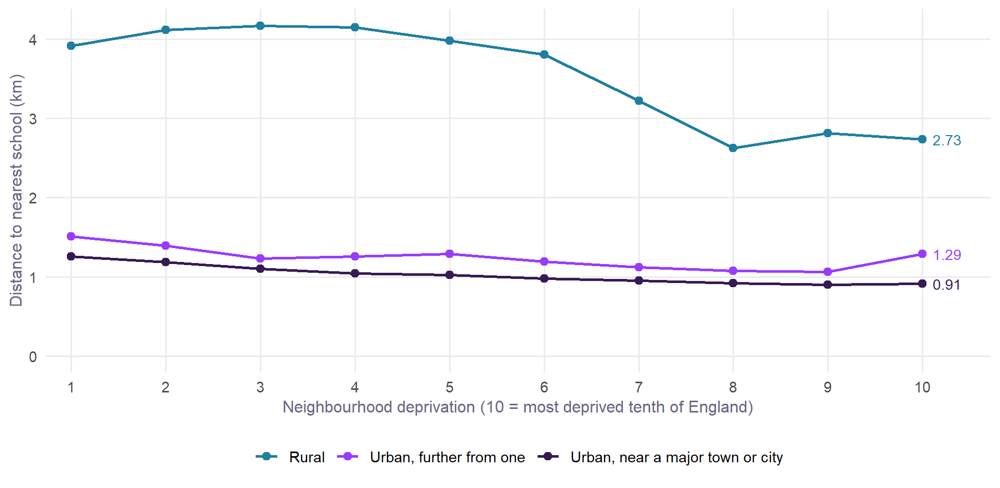
Distance to school
In straight lines, and then on real streets and bus timetables: do children in deprived neighbourhoods live further from a secondary school than their neighbours, where is that unusual, and does absence go with it?
ImportantIn short
- Across England, children in deprived neighbourhoods usually live closer to a secondary school. That holds in cities, towns and the countryside, and in 81% of districts.
- Brighton and Hove is the other way round. Children in the most deprived third of its neighbourhoods live 1.57 km from their nearest school, in a straight line, and the rest live 1.18 km. That is 33% further, the 5th largest difference of 293 districts proportionately and the 2nd largest in kilometres. Among the 109 mostly urban local authorities, none has its deprived neighbourhoods further from a school.
- Absence goes with distance, more for disadvantaged pupils, in every year tested. Across 150 authorities and six years from 2018/19, disadvantaged pupils’ absence is 3.5 points higher for each extra kilometre between deprived neighbourhoods and a school, against 0.6 for non-disadvantaged pupils and 1.7 for all pupils. It holds on eleven measures of distance and is far weaker in primary schools, as it should be if the journey to secondary school matters.
- But most of that slope is who lives in those places, not the journey. Given the ethnic mix of disadvantaged pupils in each authority, the slope falls to 0.6, and with every control to 0.3, with an interval that includes zero. Ethnic mix is a confounder here: places with schools close together tend to have disadvantaged pupils from groups who attend more.
- A smaller link remains in three separate tests. In mostly urban authorities outside London, the slope for disadvantaged pupils is still 2.5 points per kilometre given ethnic mix and region, against 0.4 in primary schools. Within one authority, pupils in the most deprived neighbourhoods have 0.45 points more absence per kilometre. And each doubling of how far a school’s nearest children live goes with 0.26 points more absence in every year, given the school’s intake and ethnic make-up, and more where more pupils are on free school meals. For disadvantaged pupils the link is mainly with unauthorised and persistent absence, not illness. These are associations, not proof of cause.
- Moving a school would change this. A school back on CoMArt’s old site, or Longhill moved to the top of Elm Grove, would bring the deprived neighbourhoods of Brighton and Hove to about 1.19 to 1.21 km and close most of the gap.
- Real journeys tell the same story for Brighton and Hove. By walking and bus, children in its most deprived neighbourhoods are 4.7 minutes further from a school than the rest, and walking alone 9.0 minutes. No comparator place is more than 1.3 minutes further by walking and bus, and its deprived neighbourhoods need the most changes of bus. See journey times.
- Among all 109 mostly urban authorities, none has its deprived neighbourhoods as far from a school by walking and bus. The next largest gaps are Tameside (3.7 minutes) and Derby (3.4 minutes), and in the median authority the deprived third is nearer. It is mostly distance, not slow buses, but 18% of those journeys need two or more buses, the most of any authority. See the 109 authorities.
- Across those authorities, distance still goes with disadvantaged absence, and the rest of the journey adds little. With every control, 1.9 points per kilometre (2.5 outside London), and little in primary. Journey time does not beat straight-line distance, and changes of bus, waiting and missing a bus add nothing once distance is known. The climb on the walk home, and busy change points (mostly in London), are hints that need more testing. School buses show no general link either: Longhill, where missing the last workable journey means arriving about 17 minutes late, is a striking case, not a pattern.
- What it could mean for GCSE results. If the extra absence is caused by the journey, each kilometre would cost disadvantaged pupils about 2.2 to 2.7 Attainment 8 points, and Brighton and Hove’s gap about 1. That is about the lower end of Gorard and Siddiqui’s estimate of what mixing intakes could gain, 1 to 3 points. GCSE results do not show the distance cost directly. See GCSE results.
- The admissions changes themselves did little either way. On the city’s school system model, the 2024 map and priority 6 together lengthened disadvantaged children’s journeys by about 0.4 minutes and lowered segregation by about 6%. In Attainment 8 points that is a journey cost of about 0.06 against a generous mixing gain of up to 0.20: both a fraction of a point. The gap comes from where the schools are. The council’s first proposal, priority 6 at 20% with Dorothy Stringer and Blatchington Mill cut to 300, would have lengthened journeys a little more and displaced more children, for no gain in mixing, and Class Divide’s 30%, with the same cuts, would have done no more. See the admissions changes and the proposals.
- But the city average hides Whitehawk. The 2024 map moved about 78 children a year in Whitehawk out of Longhill’s catchment, and lengthened their journeys, already among the city’s longest, by 3.1 minutes, and by 4.5 for the disadvantaged children among them. On the chain that is up to about 0.7 Attainment 8 points each. See whose journeys changed.
- Most of this page is in straight lines. They ignore hills, bus routes and catchments, and a child’s nearest school need not be the one they attend. Every source and calculation is in the methodology.
What this measures
How far each school’s own pupils travel is not published, so this page starts from where children live and where schools are. This is a summary: the methodology gives every source, vintage and formula.
- Schools. Every open state-funded secondary, all-through and middle deemed secondary school in England in the DfE’s register, Get Information About Schools (June 2026): 3,282 schools taking pupils at 13 or younger and keeping them to at least 16. Special schools, pupil referral units and independent schools are left out.
- Neighbourhoods. England’s 33,755 Census 2021 Lower Layer Super Output Areas, each placed at the mean of its Output Areas’ population-weighted centroids. Averages are weighted by the 10 to 14 year olds living there.
- Deprivation. The share of households deprived in two or more of the Census’s four dimensions (employment, education, health, housing), the same measure as the neighbourhood covariates.
- Distance. The straight line to the nearest school. Each place’s neighbourhoods are split into its most deprived third and the rest, so the comparison is always within one place.
- Kind of place. The ONS 2021 rural-urban classification. A district or authority is “mostly urban” if at least 80% of its 10 to 14 year olds live in urban neighbourhoods.
Schools in Wales are not in the register used here, so a few neighbourhoods on the border look further from a school than they are.
Across England, deprived neighbourhoods are nearer
Within each kind of place, the most deprived neighbourhoods tend to be among the closest to a school. One likely reason is that they are usually denser and more central.
Taken across England as a whole, children in the most deprived third of neighbourhoods live 1.00 km from a school and the rest 1.75 km. Much of that is town against country, which is why the rest of this page compares neighbourhoods within one place.
Where it runs the other way
In 19% of England’s 293 districts, children in the most deprived third of neighbourhoods live further from a school than the rest. Among the 173 mostly urban districts it is 27%. Brighton and Hove is near the top of both lists.
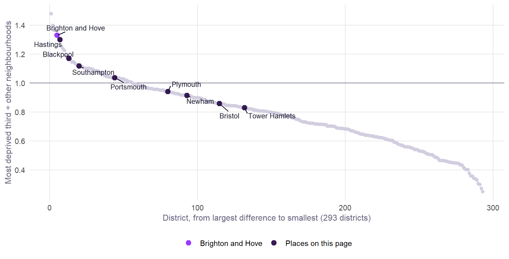
| Rank | District | Most deprived third | Other neighbourhoods | Difference (km) | Rank in km | Kind of place |
|---|---|---|---|---|---|---|
| 1 | Havering | 1.15 | 0.78 | +0.37 | 5 | Mostly urban |
| 2 | Three Rivers | 1.92 | 1.37 | +0.55 | 1 | Mostly urban |
| 3 | Derby | 1.24 | 0.91 | +0.33 | 7 | Mostly urban |
| 4 | Tameside | 1.17 | 0.88 | +0.29 | 8 | Mostly urban |
| 5 | Brighton and Hove | 1.57 | 1.18 | +0.39 | 2 | Mostly urban |
| 6 | Basildon | 1.56 | 1.19 | +0.37 | 6 | Mostly urban |
| 7 | Hastings | 1.67 | 1.29 | +0.38 | 4 | Mostly urban |
| 8 | Wandsworth | 0.82 | 0.65 | +0.17 | 15 | Mostly urban |
| 9 | St Albans | 1.29 | 1.04 | +0.25 | 9 | Mostly urban |
| 10 | East Hertfordshire | 2.10 | 1.71 | +0.39 | 3 | Mixed |
The list mixes outer London boroughs, commuter towns and cities such as Derby. Here is Brighton and Hove against other coastal and urban places, and against the rest of Sussex:
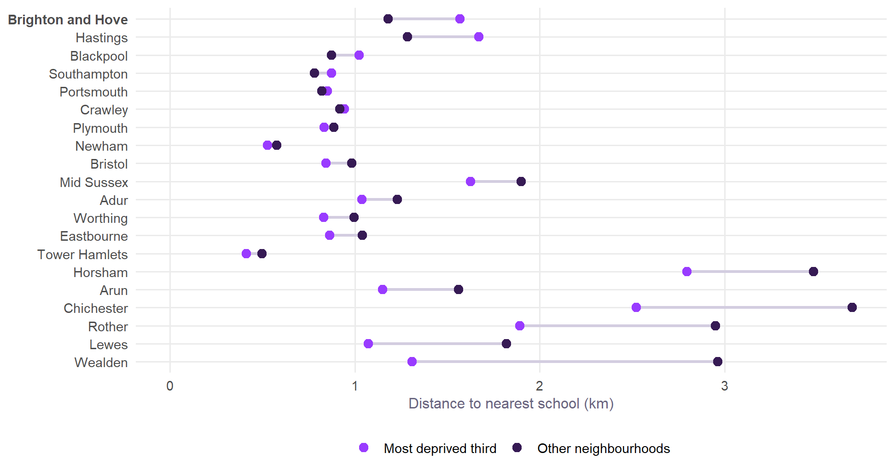
| Place | Deprived third | Other | Further | Share | Disadv. | Non-disadv. | All |
|---|---|---|---|---|---|---|---|
| Brighton and Hove | 1.57 | 1.18 | +33% (5) | 28% | 18.0% | 8.0% | 10.8% |
| Hastings | 1.67 | 1.29 | +30% (7) | – | – | – | – |
| Blackpool | 1.02 | 0.87 | +17% (13) | 48% | 13.2% | 6.1% | 9.6% |
| Southampton | 0.87 | 0.78 | +12% (20) | 41% | 15.7% | 6.8% | 10.5% |
| Portsmouth | 0.85 | 0.82 | +4% (44) | 39% | 15.5% | 6.4% | 10.1% |
| Plymouth | 0.83 | 0.89 | -6% (80) | 30% | 16.4% | 7.4% | 10.2% |
| Newham | 0.53 | 0.58 | -9% (93) | 51% | 8.3% | 5.5% | 7.0% |
| Bristol | 0.84 | 0.98 | -14% (115) | 36% | 15.8% | 7.2% | 10.3% |
| Tower Hamlets | 0.41 | 0.50 | -17% (132) | 56% | 7.6% | 5.1% | 6.5% |
Brighton and Hove and Hastings on the map
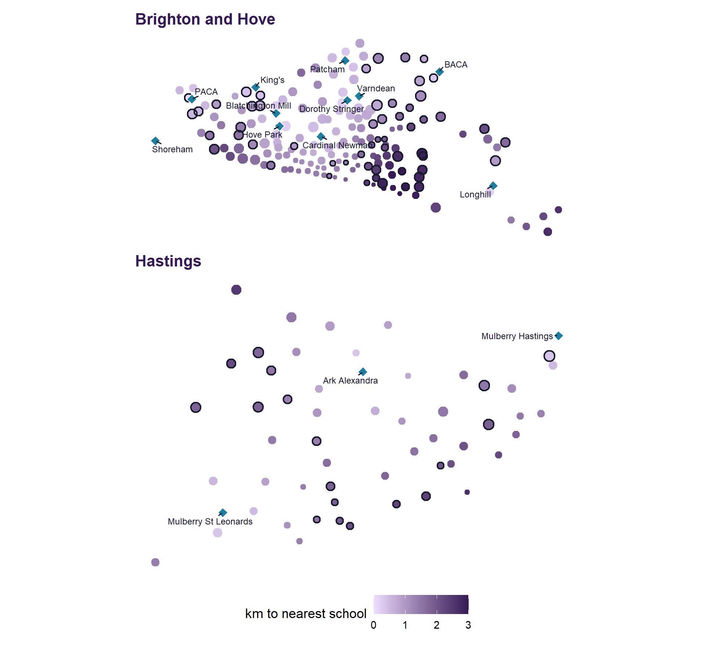
In Brighton and Hove, the neighbourhoods furthest from a school are in the east of the city, around Whitehawk, between the central schools and Longhill. The city’s school system model finds the same in routed walk and bus times: in its simulator, disadvantaged children travel about 4 minutes further each way than everyone else.
Does it depend on how it is measured?
| Measure | Brighton and Hove | Hastings | Blackpool |
|---|---|---|---|
| Nearest school (headline) | +33% (5) | +30% (7) | +17% (13) |
| Nearest, measured from Output Areas | +35% (3) | +27% (7) | +17% (12) |
| Mean of the three nearest | +24% (4) | +6% (36) | +4% (42) |
| Nearest neither selective nor faith | +23% (12) | -6% (85) | +10% (31) |
| Nearest; deprived in one or more dimensions | +28% (10) | +23% (13) | +20% (17) |
Brighton and Hove’s result holds on every version: its deprived neighbourhoods are 23% to 35% further, in the top 12 of 293 districts. Hastings and Blackpool are less certain. Their deprived neighbourhoods are further from their nearest school, but the difference is much smaller on the mean of the three nearest (+6% and +4%). In Hastings it reverses (-6%) if faith and selective schools are set aside.
Does absence go with distance?
FFT Education Datalab compared pupils within schools, using straight-line distance from their home postcodes. Those living furthest away were absent slightly more often, and the difference was wider for disadvantaged pupils. FFT calls distance “a relatively minor factor” and suggests that travel times may be instructive. Published data allow several further tests. Every source and calculation is set out in the methodology.
A first look: by authority, for all three groups
DfE publishes absence by disadvantage for each local authority, so the distance from deprived neighbourhoods to a school can be set against absence for each group of pupils.
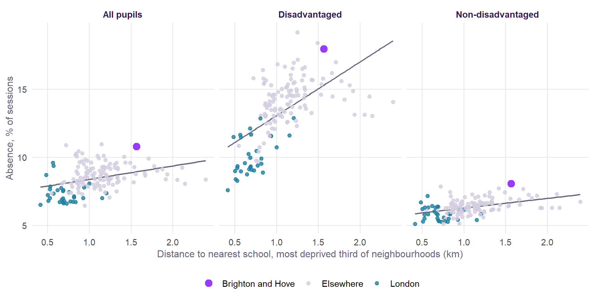
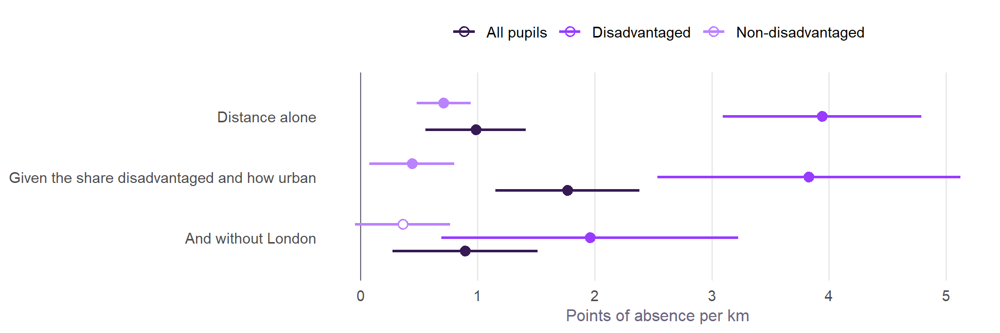
| Specification | All pupils | Disadvantaged | Non-disadvantaged |
|---|---|---|---|
| Distance alone (150 authorities) | +1.0 (+0.6 to +1.4) | +3.9 (+3.1 to +4.8) | +0.7 (+0.5 to +0.9) |
| Given the share disadvantaged and how urban (150 authorities) | +1.8 (+1.2 to +2.4) | +3.8 (+2.5 to +5.1) | +0.4 (+0.1 to +0.8) |
| And without London (118 authorities) | +0.9 (+0.3 to +1.5) | +2.0 (+0.7 to +3.2) | +0.4 (-0.0 to +0.8) |
NoteThe model behind this table
\[\text{absence}_a = \alpha + \beta\,\text{near\_dep}_a + \gamma_1\,\text{share}_a + \gamma_2\,\text{urban\_share}_a + \varepsilon_a\]
# R/18_distance.R: one row per authority, 2024/25; the same for abs_non and abs_all
lm(abs_dis ~ near_dep, data = la) # Distance alone
lm(abs_dis ~ near_dep + share + urban_share, data = la) # Given share and urbanity
lm(abs_dis ~ near_dep + share + urban_share, data = filter(la, !london)) # And without London\(\beta\) is the table’s figure: points of absence for each extra kilometre. abs_dis, abs_non, abs_all are overall absence, % of sessions, in state-funded secondary schools for each group; near_dep is the child-weighted mean straight-line km from the authority’s most deprived third of neighbourhoods to the nearest state secondary; share is the % of pupils disadvantaged; urban_share the % of 10 to 14 year olds in urban neighbourhoods.
The slope looks about 9 times steeper for disadvantaged pupils than for non-disadvantaged pupils once share and urbanity are allowed for, and about 5 times steeper without London. London pulls the fit up, because its schools are close together and its disadvantaged pupils attend well.
It is the distance that goes with absence, not the gap within the authority. Added to the same model, how much further the deprived neighbourhoods are than the rest has no clear relationship with absence for any group (disadvantaged t = -0.4, non-disadvantaged t = -1.4, all pupils t = -0.3). Fairness in access and the level of access are separate questions.
One year, one measure and three controls cannot carry much weight. The rest of this section tries to break the result.
How firm is it?
NoteThe answer so far
The pattern is consistent. The size of Figure 5 is not to be trusted. Absence goes with distance in every year from 2018/19 and on every measure of distance tried, more for disadvantaged pupils, and far less in primary schools. But most of the slope in Figure 5 comes from who lives where. Given the ethnic mix of each group of pupils it falls by about four-fifths, and with every control no clear slope is left across all authorities. A smaller link remains in mostly urban authorities, within authorities for the most deprived neighbourhoods, and between schools.
Table 5 puts the authority tests side by side, pooling the six years.
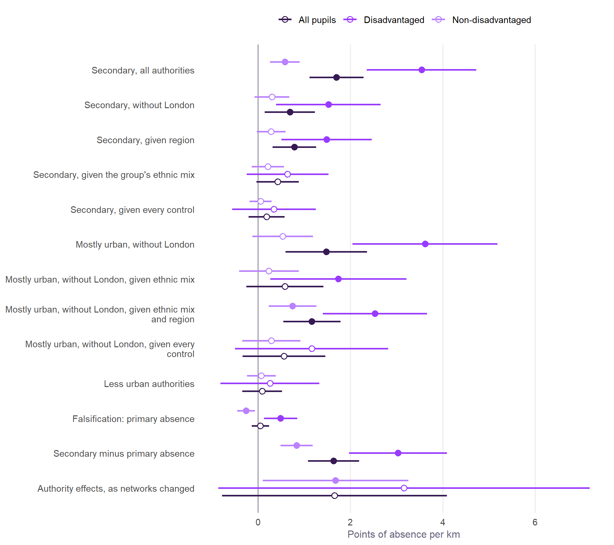
| Test | All pupils | Disadvantaged | Non-disadvantaged |
|---|---|---|---|
| Secondary, all authorities | +1.70 (+1.11 to +2.28) | +3.54 (+2.36 to +4.73) | +0.58 (+0.26 to +0.90) |
| ... without London | +0.69 (+0.14 to +1.23) | +1.52 (+0.39 to +2.66) | +0.30 (-0.07 to +0.68) |
| ... given region | +0.79 (+0.31 to +1.26) | +1.48 (+0.51 to +2.46) | +0.28 (-0.03 to +0.60) |
| ... given the ethnic mix of that group | +0.43 (-0.03 to +0.88) | +0.64 (-0.25 to +1.53) | +0.21 (-0.13 to +0.56) |
| ... given every control | +0.18 (-0.21 to +0.57) | +0.34 (-0.56 to +1.25) | +0.05 (-0.19 to +0.29) |
| Mostly urban, without London | +1.48 (+0.59 to +2.36) | +3.61 (+2.05 to +5.18) | +0.53 (-0.12 to +1.19) |
| ... given the ethnic mix of that group | +0.58 (-0.25 to +1.42) | +1.74 (+0.26 to +3.21) | +0.23 (-0.41 to +0.88) |
| ... given ethnic mix and region | +1.17 (+0.55 to +1.78) | +2.53 (+1.40 to +3.66) | +0.75 (+0.23 to +1.26) |
| ... given every control | +0.56 (-0.33 to +1.46) | +1.16 (-0.50 to +2.82) | +0.29 (-0.34 to +0.92) |
| Less urban authorities | +0.09 (-0.34 to +0.52) | +0.26 (-0.81 to +1.32) | +0.07 (-0.24 to +0.38) |
| Falsification: primary absence | +0.05 (-0.14 to +0.24) | +0.49 (+0.13 to +0.85) | -0.26 (-0.45 to -0.07) |
| Secondary minus primary absence | +1.64 (+1.08 to +2.19) | +3.03 (+1.97 to +4.09) | +0.83 (+0.49 to +1.18) |
| Authority effects: as each school network changed | +1.65 (-0.78 to +4.09) | +3.16 (-0.86 to +7.18) | +1.68 (+0.10 to +3.26) |
NoteThe model behind this table
\[\text{absence}_{a,t} = \beta\,\text{near\_dep}_{a,t} + \gamma_1\,\text{share}_{a,t} + \gamma_2\,\text{urban\_share}_{a} + \boldsymbol{\delta}'\mathbf{x}_{a,t} + \tau_t + \varepsilon_{a,t}\]
# R/19_distance_absence.R: authorities by year, secondary, one group at a time
feols(overall ~ near_dep + share + urban_share | tp, data = A, cluster = ~la) # first rows
feols(overall ~ near_dep + share + urban_share + gor_name | tp, ...) # given region
feols(overall ~ near_dep + share + urban_share + eth_wb + eth_asian + eth_black + eth_mixed | tp, ...) # given ethnic mix
feols(overall ~ near_dep + share + urban_share + eth_wb + eth_asian + eth_black + eth_mixed + gor_name +
graduates + bad_health + white_british + social_rent + no_car + deprived + log_density +
sen_sup + ehcp + ks2_c + eal + wbri + mobile | tp, ...) # every control\(t\) is the year (2018/19, 2020/21 to 2024/25), \(\tau_t\) year effects, and errors are clustered by authority \(a\). \(\mathbf{x}\) is whichever extra controls the row names. The primary rows use primary absence on the left. Every variable is in the glossary.
Across six years
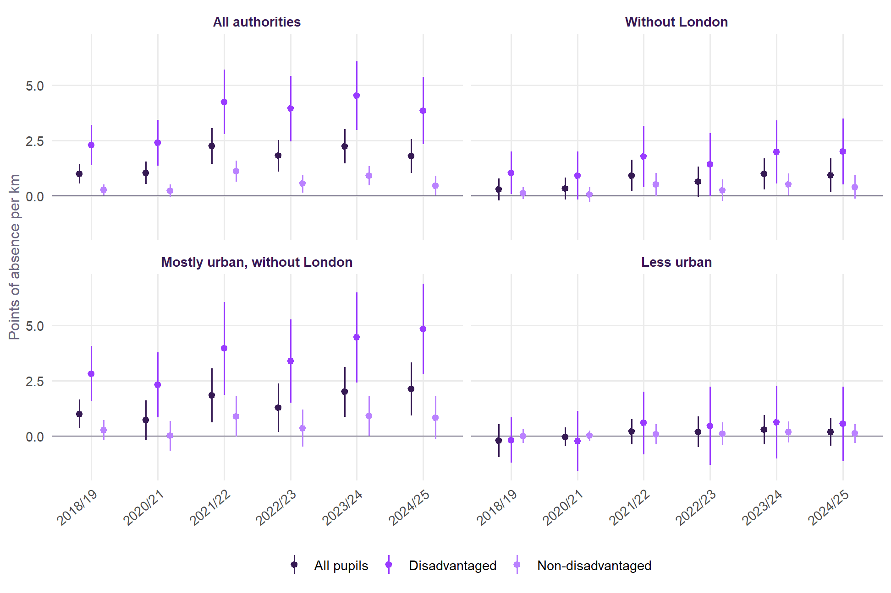
The slope for disadvantaged pupils is positive in all six years, from 2.3 to 4.5 points per kilometre. It was already there before the pandemic (+2.3 in 2018/19) and has been larger since 2021/22. Authorities whose deprived neighbourhoods were further from a school saw disadvantaged absence rise more between 2018/19 and 2024/25 (+1.6 points per kilometre, t = 2.9), with no clear difference for non-disadvantaged pupils (+0.1, t = 0.7).
Distance is recalculated each year from school opening and closing dates, so earlier years are not measured against today’s schools. The network has grown from 3,226 schools in September 2018 to 3,289 in September 2025.
On every measure of distance, and in every model
To avoid resting on any one choice, the same model was fitted on every combination of 6 years, 11 measures of distance, 6 sets of controls and 5 samples of authorities, for each group of pupils: 1,980 models per group, shown in Figure 9. These models are not independent of one another, so the shares describe how far the answer depends on the choices made. They are not a significance test.
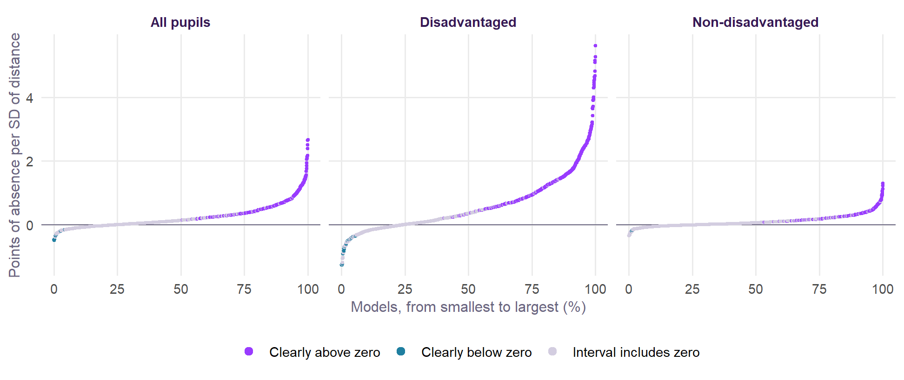
| Choice | All pupils | Disadvantaged | Non-disadvantaged |
|---|---|---|---|
| None | 85% (46%) | 91% (79%) | 94% (62%) |
| Share disadvantaged, how urban | 94% (68%) | 94% (73%) | 94% (38%) |
| And region | 86% (55%) | 86% (61%) | 83% (24%) |
| And Census place | 72% (15%) | 69% (18%) | 72% (6%) |
| And pupils | 62% (1%) | 63% (7%) | 54% (0%) |
| And primary absence | 64% (0%) | 56% (2%) | 58% (0%) |
| All authorities | 85% (39%) | 85% (46%) | 79% (30%) |
| Without London | 72% (18%) | 68% (32%) | 81% (19%) |
| Mostly urban | 97% (56%) | 100% (66%) | 90% (37%) |
| Mostly urban, without London | 94% (35%) | 97% (55%) | 90% (14%) |
| Less urban | 37% (6%) | 33% (0%) | 41% (8%) |
NoteThe model behind this table
\[\text{absence}_a = \alpha + \beta\,\text{distance}^{(m)}_a + \boldsymbol{\gamma}'\mathbf{x}^{(c)}_a + \varepsilon_a \quad \text{(one year at a time)}\]
# R/19_distance_absence.R: every combination of year, distance measure m, control set c and sample
lm(overall ~ measure + <controls>, data = <one year, one sample>) # HC3 errors
# measure: each of the eleven distance measures (table below)
# controls: none; share and urbanity; and region; and Census place; and pupils; and primary absence
# sample: all authorities, without London, mostly urban, mostly urban without London, less urbanThe table counts how often \(\beta > 0\) across those models, and how often its 95% interval is wholly above zero; the figure shows \(\beta\) times the standard deviation of the measure that year.
Across all of these, 77% of the slopes for disadvantaged pupils are above zero, 40% clearly so and 2% clearly below. The choice of measure makes little difference. The choice of controls and sample makes a great deal, as Table 6 shows: with few controls most models are clearly positive, and under the fullest sets few are.
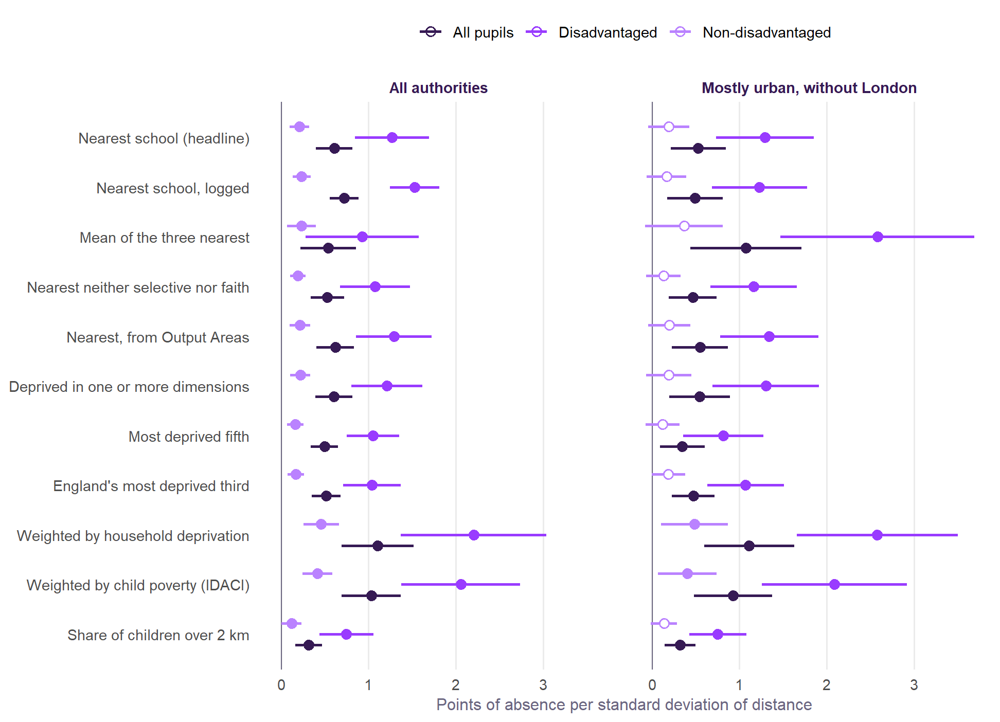
| Measure | All | Disadv. | Non-disadv. | All | Disadv. | Non-disadv. |
|---|---|---|---|---|---|---|
| Nearest school (headline) | +0.61 | +1.27 | +0.21 | +0.53 | +1.29 | +0.19† |
| Nearest school, logged | +0.72 | +1.53 | +0.23 | +0.49 | +1.23 | +0.16† |
| Mean of the three nearest | +0.54 | +0.93 | +0.23 | +1.07 | +2.58 | +0.37† |
| Nearest neither selective nor faith | +0.53 | +1.07 | +0.19 | +0.47 | +1.16 | +0.13† |
| Nearest, from Output Areas | +0.62 | +1.29 | +0.21 | +0.55 | +1.34 | +0.20† |
| Deprived in one or more dimensions | +0.60 | +1.21 | +0.22 | +0.54 | +1.30 | +0.19† |
| Most deprived fifth | +0.49 | +1.05 | +0.16 | +0.35 | +0.82 | +0.12† |
| England's most deprived third | +0.51 | +1.04 | +0.17 | +0.47 | +1.07 | +0.19† |
| Weighted by household deprivation | +1.10 | +2.20 | +0.46 | +1.11 | +2.58 | +0.49 |
| Weighted by child poverty (IDACI) | +1.03 | +2.06 | +0.42 | +0.93 | +2.09 | +0.40 |
| Share of children over 2 km | +0.31 | +0.75 | +0.12 | +0.32 | +0.75 | +0.14† |
NoteThe model behind this table
\[\text{absence}_{a,t} = \beta\,z^{(m)}_{a,t} + \gamma_1\,\text{share}_{a,t} + \gamma_2\,\text{urban\_share}_{a} + \tau_t + \varepsilon_{a,t}, \qquad z^{(m)}_{a,t} = \frac{\text{measure}^{(m)}_{a,t}}{\text{sd}_t\!\left(\text{measure}^{(m)}\right)}\]
# R/19_distance_absence.R: one model for each measure m
feols(overall ~ z + share + urban_share | tp, data = A, cluster = ~la)Each measure is divided by its standard deviation across authorities in that year, so \(\beta\) is points of absence for one standard deviation more distance, comparable across measures.
Nor does it depend on a handful of places. Table 8 repeats the 2024/25 model with errors that allow for neighbouring authorities being alike, with pupil weights, with a method that discounts outliers, and without the most influential authorities. Dropping any one authority leaves the slope for disadvantaged pupils between 3.6 and 4.2.
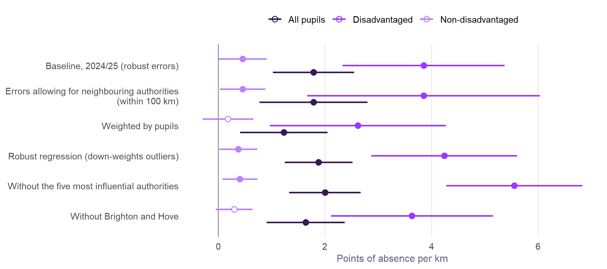
| Check | All pupils | Disadvantaged | Non-disadvantaged |
|---|---|---|---|
| Baseline, 2024/25 (robust errors) | +1.79 (+1.03 to +2.55) | +3.85 (+2.33 to +5.37) | +0.46 (+0.00 to +0.91) |
| Errors allowing for neighbouring authorities (within 100 km) | +1.79 (+0.78 to +2.80) | +3.85 (+1.67 to +6.03) | +0.46 (+0.03 to +0.88) |
| Weighted by pupils | +1.23 (+0.41 to +2.05) | +2.62 (+0.97 to +4.27) | +0.18 (-0.29 to +0.65) |
| Robust regression (down-weights outliers) | +1.88 (+1.25 to +2.52) | +4.24 (+2.87 to +5.61) | +0.38 (+0.02 to +0.73) |
| Without the five most influential authorities | +2.00 (+1.33 to +2.67) | +5.55 (+4.27 to +6.83) | +0.41 (+0.08 to +0.74) |
| Without Brighton and Hove | +1.64 (+0.91 to +2.37) | +3.63 (+2.11 to +5.16) | +0.30 (-0.04 to +0.65) |
NoteThe model behind this table
\[\text{absence}_a = \alpha + \beta\,\text{near\_dep}_a + \gamma_1\,\text{share}_a + \gamma_2\,\text{urban\_share}_a + \varepsilon_a\]
# R/19_distance_absence.R: 2024/25, one row per authority
f <- overall ~ near_dep + share + urban_share
lm(f, d) # the base model
lm(f, d[-i, ]) # leaving out each authority in turn
MASS::rlm(f, data = d, method = "MM") # robust to outliers
lm(f, d, weights = n_all) # weighted by pupils, HC3 errors
feols(f, d, vcov = vcov_conley(lat = ~lat, lon = ~lon, cutoff = 100)) # errors allowing for neighbours within 100 kmWhich neighbourhoods’ distance matters is also informative. Put the deprived neighbourhoods and the others in one model, and for disadvantaged pupils the deprived neighbourhoods’ distance carries about twice the weight (+3.1 against +1.6 per kilometre). For non-disadvantaged pupils the two are about equal (+0.4 and +0.4).
The relationship is not a straight line, either. Compared with authorities under 1 km, disadvantaged absence is 1.8 points higher at 1 to 1.5 km and 2.2 at 1.5 to 2 km, but only 0.7 at 2 to 3 km, where there are just 4 authorities, all large and rural.
What takes the slope away?
Controls overlap, so adding them one by one cannot say which one matters. Figure 12 splits the fall from the first model to the fullest into a part for each block of controls, using a method that does not depend on the order they go in (a Gelbach decomposition; details).
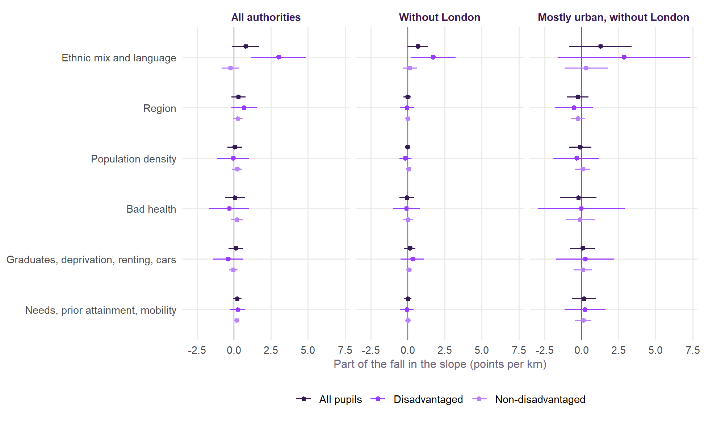
It is ethnic mix, and very little else. Of the fall from 3.52 to 0.34 points per kilometre for disadvantaged pupils, ethnic mix and language account for 3.01. Region adds 0.69, almost all of it London. Without London region adds nothing (-0.05), and ethnic mix accounts for all of the fall (1.72, against a fall of 1.63, since the other parts are slightly negative overall). Density, health, cars, deprivation and needs each do little once ethnic mix is held, and their parts roughly cancel.
Figure 13 shows it directly, using DfE’s count of pupils by ethnicity and free school meals in each authority, so that each group of pupils is compared on its own ethnic mix.
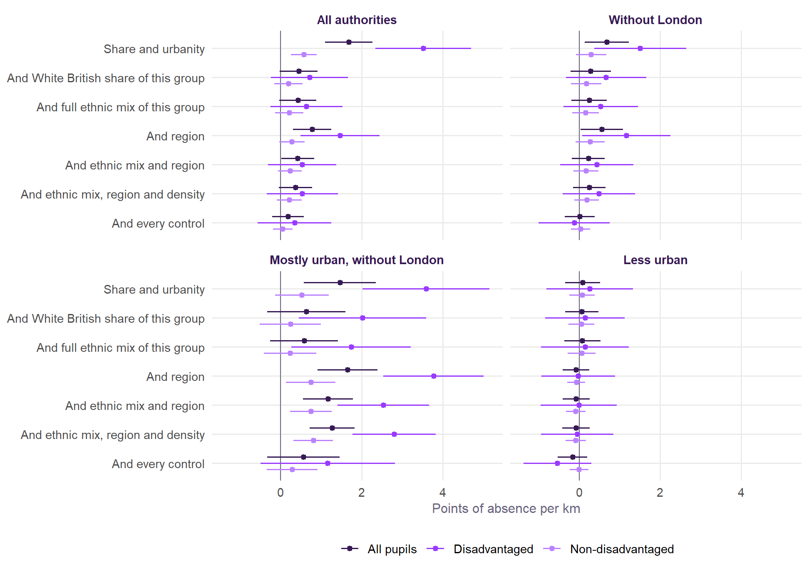
Why would ethnic mix do this? In 2024/25 the White British share of an authority’s disadvantaged pupils correlates with how far its deprived neighbourhoods are from a school (r = 0.69), since diverse places tend to be dense places with schools close together. On its own that share accounts for 63% of the variation in disadvantaged absence between authorities. So where schools are close, disadvantaged pupils also tend to be from groups with higher attendance, and a simple plot such as Figure 5 credits distance with that. This says nothing about why attendance differs between groups: ethnic mix stands in for migration histories, family and community ties and much else, none of which the data can separate.
Confounding or mediation? A mediator lies on the path: distance would change it, and it would change absence. A confounder drives both. The evidence points to confounding.
- A longer journey to school does not change the ethnic mix of a place, so ethnic mix cannot sensibly be a mediator of distance. It is a confounder, or composition.
- The obvious candidates for mediation contribute little. Households with no car and population density barely move the slope once ethnic mix is held (Figure 12). That does not rule out mediation, because authority-wide averages are a poor measure of how any one family travels.
The test of composition is whether the link holds within one ethnic group. DfE publishes absence by ethnic group for each authority, though not split by disadvantage.
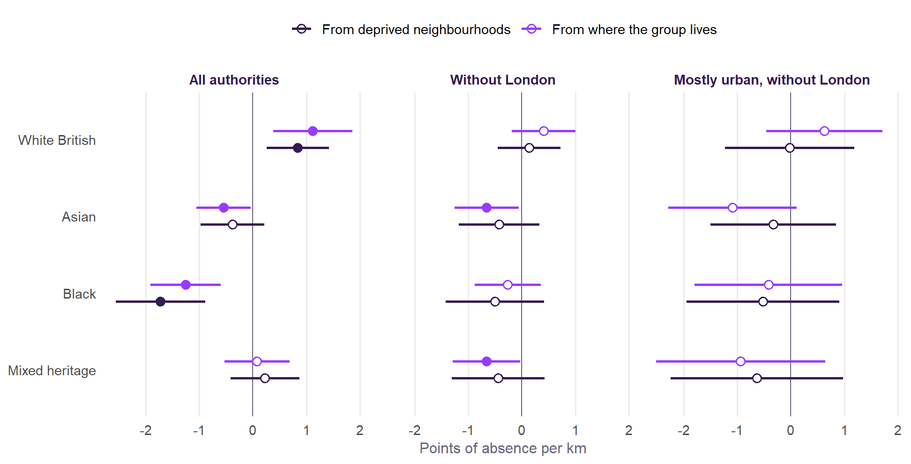
| Ethnic group | Distance | All authorities | Without London | Mostly urban, without London |
|---|---|---|---|---|
| White British | From deprived neighbourhoods | +0.84 (+0.26 to +1.42) | +0.14 (-0.45 to +0.72) | -0.02 (-1.23 to +1.18) |
| White British | From where the group lives | +1.12 (+0.38 to +1.86) | +0.41 (-0.18 to +1.00) | +0.63 (-0.46 to +1.71) |
| Asian | From deprived neighbourhoods | -0.38 (-0.98 to +0.21) | -0.42 (-1.17 to +0.33) | -0.33 (-1.50 to +0.85) |
| Asian | From where the group lives | -0.55 (-1.05 to -0.04) | -0.66 (-1.26 to -0.06) | -1.09 (-2.29 to +0.11) |
| Black | From deprived neighbourhoods | -1.72 (-2.56 to -0.89) | -0.50 (-1.42 to +0.42) | -0.52 (-1.94 to +0.90) |
| Black | From where the group lives | -1.26 (-1.91 to -0.60) | -0.26 (-0.88 to +0.35) | -0.42 (-1.79 to +0.96) |
| Mixed heritage | From deprived neighbourhoods | +0.23 (-0.42 to +0.87) | -0.44 (-1.31 to +0.43) | -0.63 (-2.24 to +0.98) |
| Mixed heritage | From where the group lives | +0.08 (-0.53 to +0.69) | -0.66 (-1.29 to -0.03) | -0.93 (-2.51 to +0.64) |
NoteThe model behind this table
\[\text{absence}^{(e)}_{a,t} = \beta\,\text{distance}^{(e)}_{a} + \gamma_1\,\text{share}_{a,t} + \gamma_2\,\text{urban\_share}_{a} + \tau_t + \varepsilon_{a,t}\]
# R/19_distance_absence.R: one ethnic group e at a time, authorities with 100+ pupils in it
feols(overall ~ near_dep + share + urban_share | tp, data = E, cluster = ~la) # from deprived neighbourhoods
feols(overall ~ near_e + share + urban_share | tp, data = E, cluster = ~la) # from where the group livesoverall is the absence of all pupils of ethnic group \(e\) in the authority (DfE does not split these by disadvantage). near_e is the mean straight-line km to a school over all neighbourhoods, weighted by the group’s Census residents.
The slope mostly goes. For White British pupils it is +0.84 per kilometre, and about zero outside London (+0.14) and in mostly urban authorities outside London (-0.02). For Asian and Black pupils it is below zero. Directly standardising says the same for all pupils: of a slope of 1.70, 1.01 is what each authority’s ethnic mix would give at national rates, and 0.69 is left (t = 3.3), or 0.28 without London (t = 1.1).
This test cannot settle things for disadvantaged pupils, because most pupils in each ethnic group are not disadvantaged, and non-disadvantaged pupils show little slope anyway. A clear link among disadvantaged White British pupils could be hidden inside a flat line for all White British pupils. DfE publishes nothing that would show it.
Is anything left once the controls are in?
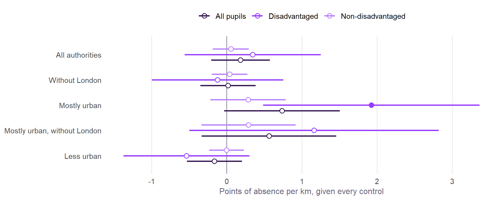
| Sample | Authorities | All pupils | Disadvantaged | Non-disadvantaged | Explained |
|---|---|---|---|---|---|
| All authorities | 150 | +0.18 (-0.21 to +0.57) | +0.34 (-0.56 to +1.25) | +0.05 (-0.19 to +0.29) | 76% |
| Without London | 118 | +0.02 (-0.35 to +0.38) | -0.12 (-1.00 to +0.75) | +0.04 (-0.20 to +0.28) | 69% |
| Mostly urban | 109 | +0.74 (-0.03 to +1.50) | +1.92 (+0.49 to +3.36) | +0.28 (-0.22 to +0.78) | 76% |
| Mostly urban, without London | 77 | +0.56 (-0.33 to +1.46) | +1.16 (-0.50 to +2.82) | +0.29 (-0.34 to +0.92) | 65% |
| Less urban | 41 | -0.16 (-0.53 to +0.20) | -0.54 (-1.37 to +0.30) | -0.00 (-0.24 to +0.23) | 72% |
NoteThe model behind this table
\[\text{absence}_{a,t} = \beta\,\text{near\_dep}_{a,t} + \underbrace{\gamma_1\,\text{share} + \gamma_2\,\text{urban\_share}}_{\text{share and urbanity}} + \underbrace{\boldsymbol{\delta}'\,\text{ethnic mix}}_{4} + \underbrace{\rho_{\text{region}}}_{9} + \underbrace{\boldsymbol{\kappa}'\,\text{Census}}_{7} + \underbrace{\boldsymbol{\pi}'\,\text{pupils}}_{6} + \tau_t + \varepsilon_{a,t}\]
# R/19_distance_absence.R: authorities by year, secondary, for each group (dis, non, all) and sample
feols(overall ~ near_dep + share + urban_share +
eth_wb + eth_asian + eth_black + eth_mixed + # ethnic mix of this group
gor_name + # region
graduates + bad_health + white_british + social_rent + no_car + deprived + log_density + # Census
sen_sup + ehcp + ks2_c + eal + wbri + mobile # pupils
| tp, data = A, cluster = ~la)
# "Explained": R-squared of the same controls predicting near_dep
feols(near_dep ~ share + urban_share + eth_wb + ... + mobile | tp, data = A)\(\beta\) is the table’s figure. The ethnic mix is the shares of that group’s pupils who are White British, Asian, Black and of mixed heritage; the Census measures are of the authority’s residents and households; the pupil measures are of its secondary pupils. Every variable is in the glossary.
Across all authorities, no clear slope is left for any group: +0.34 for disadvantaged pupils, with an interval from -0.6 to +1.2. Adding distance to that model leaves its fit unchanged (R² 0.881 to 0.881). But that interval does not mean zero. It still allows a little over one point per kilometre, and the controls account for 76% of the variation in distance, so the model has little left to work with, and 28 terms for 150 authorities.
The link survives further in towns and cities. In mostly urban authorities it is +1.92 with every control (t = 2.6). Outside London it is +2.53 given ethnic mix and region (t = 4.4), and +1.16 with every control, when its interval includes zero. In less urban authorities there is nothing at any stage.
Other designs are not subject to this limit, and they are in the sections that follow. Within authorities the link stays in the most deprived neighbourhoods given Census character, including their White British residents (below). At school level it survives the school’s own ethnic make-up in every year (below).
A falsification test: primary schools
If the link is about getting to a secondary school, the distance to a secondary school should say little about absence in primary schools. If it is about the place, it should predict both. The same children and families are involved, so this is a sharp test.
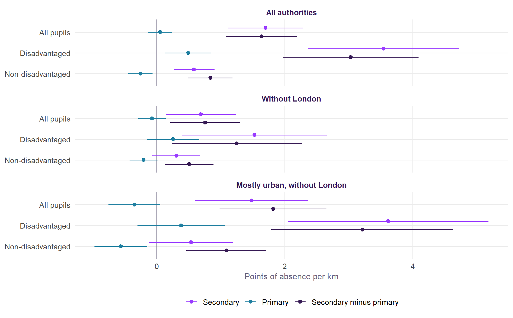
It passes on these controls. For disadvantaged pupils the slope is +3.5 in secondary schools and +0.5 in primary, and it is +3.0 on the step up from primary to secondary within the same authority and year, which sets aside anything about a place that affects both phases. For non-disadvantaged pupils the primary slope is -0.3, below zero. The step up is steeper for disadvantaged pupils than for non-disadvantaged pupils by 2.2 points per kilometre (t = 5.3), or 0.7 without London (t = 2.0).
The small primary slope for disadvantaged pupils is not zero, which suggests some of the secondary slope is the place. Distance to a primary school itself goes with primary absence for disadvantaged pupils (+1.8 per kilometre, t = 2.1), though primary schools are so close that a kilometre is a long way. The test is less clear once ethnic mix is held, because the difference in attendance between ethnic groups is itself wider in secondary school than in primary. Across all authorities the step up for disadvantaged pupils falls to +0.42 (t = 1.0). In mostly urban authorities outside London the test still passes: given ethnic mix and region, +2.5 in secondary, +0.4 in primary, and +2.0 on the step up (t = 3.3).
Within the same authority
Everything so far compares one authority with another, so anything about a whole place can be mistaken for distance. A second DfE data set offers a stronger test. For 2023/24 and 2024/25 it gives absence by where pupils live, not where they go to school, in each authority, by the national tenth of the Income Deprivation Affecting Children Index (IDACI) of their home neighbourhood. Those tenths can be matched to the distance from the same neighbourhoods, giving 2,898 groups of pupils in 150 authorities. The number of pupils in each group lines up closely with the Census count of children (r = 0.99). DfE does not split this file by disadvantage, so it describes all pupils living in each kind of neighbourhood.
Brighton and Hove stands out in it (Figure 17). Across England, children in the most deprived neighbourhoods live nearest a school. In Brighton and Hove they live furthest away, and absence and persistent absence climb much more steeply with deprivation than in England.
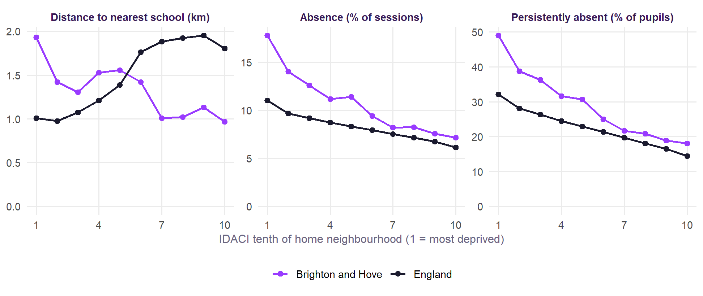
The children in the city’s most deprived tenth of neighbourhoods live 1.93 km from a school, against 1.01 km for that tenth across England. They miss 17.8% of sessions against 11.0%, and 49% are persistently absent against 32%.
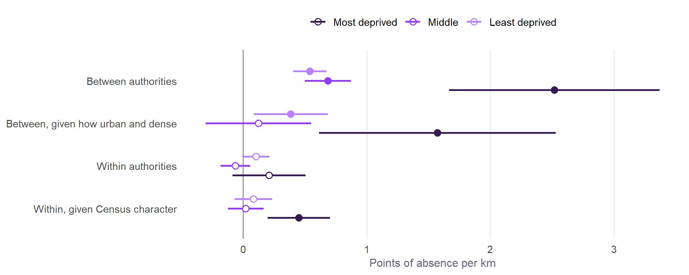
| Comparison | Most deprived | Middle | Least deprived |
|---|---|---|---|
| Between authorities | +2.52 (+1.67 to +3.37) | +0.69 (+0.50 to +0.87) | +0.54 (+0.40 to +0.67) |
| Between, given how urban and dense | +1.57 (+0.61 to +2.53) | +0.12 (-0.30 to +0.55) | +0.39 (+0.09 to +0.69) |
| Within authorities | +0.21 (-0.09 to +0.51) | -0.06 (-0.18 to +0.06) | +0.10 (-0.01 to +0.21) |
| Within, given Census character | +0.45 (+0.20 to +0.70) | +0.02 (-0.12 to +0.17) | +0.08 (-0.07 to +0.24) |
NoteThe model behind this table
\[\text{absence}_{a,d,t} = \beta\,\text{near}_{a,d} + \boldsymbol{\gamma}'\mathbf{c}_{a,d} + \alpha_{a,t} + \delta_{d,t} + \varepsilon_{a,d,t}\]
# R/19_distance_absence.R: one row per authority a, IDACI tenth d and year t, secondary, weighted by pupils
feols(overall ~ near | dec^tp, data = B, weights = ~enrol, cluster = ~la) # between authorities
feols(overall ~ near + urban_c + dens_c | dec^tp, ...) # between, given urban and dense
feols(overall ~ near | la^tp + dec^tp, ...) # within authorities
feols(overall ~ near + urban_c + dens_c + grad_c + wbri_c + nocar_c + social_c + bad_c | la^tp + dec^tp, ...) # within, given Census characteroverall is absence of all pupils living in that tenth of that authority (DfE, absence by pupil residence). near is the child-weighted mean straight-line km from those neighbourhoods to the nearest school. \(\alpha_{a,t}\) (authority by year) compares neighbourhoods within one authority; \(\delta_{d,t}\) (tenth by year) takes out the national pattern for each tenth. The _c terms are the Census character of the neighbourhoods, centred.
Three things follow.
- Most of the slope between authorities is not there within them. For the most deprived three tenths it is +2.5 per kilometre between authorities, and +0.21 within them, or +0.45 given Census character. Part of that fall will be noise, because the distance for a tenth of an authority’s neighbourhoods is a rough average of places that can be far apart. Even so, the safer reading is that most of the slope between authorities is about the authorities, which fits what ethnic mix does above. Holding Census character raises the slope, because within an authority the further neighbourhoods tend to be less urban and less dense (r = -0.51 and -0.46), and differ little in their White British share (r = 0.10). So the clearer estimate depends on that adjustment: without it the interval includes zero.
- What remains is where it should be. Within authorities, given Census character, the link is clear only for pupils in the most deprived three tenths. It is steeper there than in the least deprived three tenths by 0.59 points per kilometre (t = 3.1). It is similar in each year (+0.48 and +0.41), without London (+0.48) and without Brighton and Hove (+0.41).
- It is much weaker in primary schools. In the same neighbourhoods the primary slope is +0.14, with an interval that includes zero, against +0.45 in secondary. The persistent absence result is +1.6 points of pupils per kilometre in secondary (t = 3.7) and +0.5 in primary (t = 1.6).
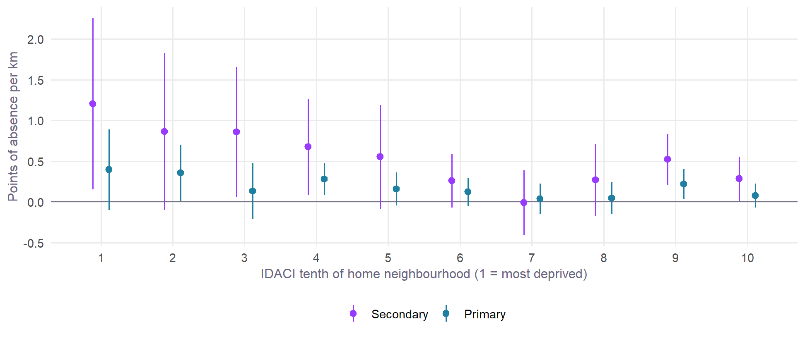
When the school network changes
The strongest test available would follow the same place as a school opens or closes nearby. Table 12 does this for authorities and for schools. Very few authorities’ distance moved much: only 17 of 150 changed by 50 metres or more between 2018/19 and 2024/25. Brighton and Hove did not change at all. So these estimates are imprecise.
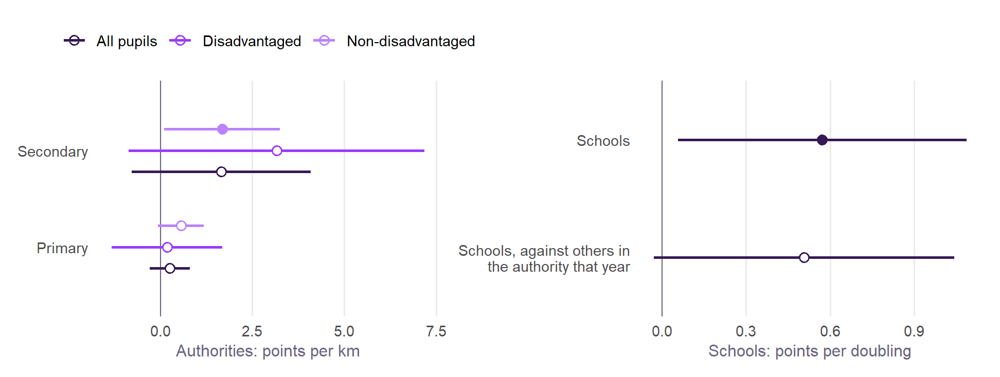
| Comparison | Estimate |
|---|---|
| Authorities: secondary, disadvantaged | +3.16 (-0.86 to +7.18) |
| Authorities: secondary, non-disadvantaged | +1.68 (+0.10 to +3.26) |
| Authorities: secondary, all pupils | +1.65 (-0.78 to +4.09) |
| Authorities: primary, disadvantaged | +0.18 (-1.32 to +1.68) |
| Authorities: primary, non-disadvantaged | +0.56 (-0.07 to +1.18) |
| Authorities: primary, all pupils | +0.25 (-0.30 to +0.80) |
| Schools: all pupils | +0.57 (+0.06 to +1.09) |
| Schools: all pupils, against others in the authority that year | +0.51 (-0.03 to +1.04) |
NoteThe model behind this table
\[\text{absence}_{a,t} = \beta\,\text{near\_dep}_{a,t} + \gamma\,\text{share}_{a,t} + \alpha_a + \tau_t + \varepsilon_{a,t} \qquad \text{absence}_{s,t} = \beta\,\log_2 \text{km}_{s,t} + \boldsymbol{\gamma}'\mathbf{z}_{s,t} + \alpha_s + \tau_t + \varepsilon_{s,t}\]
# R/19_distance_absence.R
feols(dis_sec ~ near_dep + share | la + tp, data = wide, cluster = ~la) # authorities; likewise each group and phase
feols(overall ~ l2 + fsm_c + sen_sup + ehcp + eal + girls + lsize | cid + tp, data = S, cluster = ~cid) # schools
feols(overall ~ l2 + l2:fsm_c + fsm_c + sen_sup + ehcp + eal + girls + lsize | cid + la_g^tp, data = S, cluster = ~cid) # schools, against others in the authority that yearWith an effect \(\alpha\) for each authority or school, \(\beta\) is estimated only from changes over time in the same place, as schools open, close and change. l2 is \(\log_2\) of the mean straight-line km of the school’s nearest children; cid follows a school through changes of number.
All point in the expected direction, and at the secondary level the authority estimate for disadvantaged pupils (+3.2) is similar in size to the slope between authorities. But its interval is wide and includes zero. At school level, 156 of 3,121 schools saw their nearest children’s distance change by 10% or more. These are consistent with distance mattering, but do not establish it. New schools also open where populations are growing, so these changes are not random.
What kind of absence?
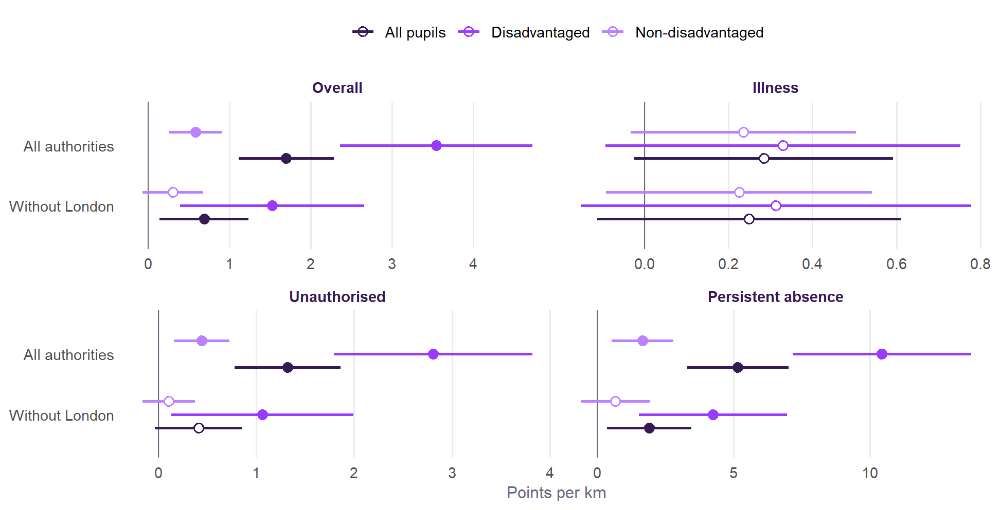
| Group | Kind | Mean | All authorities | Without London |
|---|---|---|---|---|
| All pupils | Overall | 7.7 | +1.70 (+1.11 to +2.28) | +0.69 (+0.14 to +1.23) |
| All pupils | Illness | 3.5 | +0.28 (-0.02 to +0.59) | +0.25 (-0.11 to +0.61) |
| All pupils | Unauthorised | 2.8 | +1.32 (+0.78 to +1.86) | +0.41 (-0.03 to +0.85) |
| All pupils | Persistent absence | 22.1 | +5.16 (+3.30 to +7.02) | +1.91 (+0.36 to +3.47) |
| Disadvantaged | Overall | 12.0 | +3.54 (+2.36 to +4.73) | +1.52 (+0.39 to +2.66) |
| Disadvantaged | Illness | 4.2 | +0.33 (-0.09 to +0.75) | +0.31 (-0.15 to +0.78) |
| Disadvantaged | Unauthorised | 5.5 | +2.81 (+1.79 to +3.82) | +1.06 (+0.13 to +1.99) |
| Disadvantaged | Persistent absence | 37.3 | +10.45 (+7.18 to +13.72) | +4.25 (+1.53 to +6.98) |
| Non-disadvantaged | Overall | 6.0 | +0.58 (+0.26 to +0.90) | +0.30 (-0.07 to +0.68) |
| Non-disadvantaged | Illness | 3.3 | +0.23 (-0.03 to +0.50) | +0.23 (-0.09 to +0.54) |
| Non-disadvantaged | Unauthorised | 1.7 | +0.44 (+0.16 to +0.73) | +0.10 (-0.16 to +0.37) |
| Non-disadvantaged | Persistent absence | 15.5 | +1.67 (+0.53 to +2.80) | +0.67 (-0.60 to +1.94) |
NoteThe model behind this table
\[\text{absence}^{(k)}_{a,t} = \beta\,\text{near\_dep}_{a,t} + \gamma_1\,\text{share}_{a,t} + \gamma_2\,\text{urban\_share}_{a} + \tau_t + \varepsilon_{a,t}\]
# R/19_distance_absence.R: for each kind of absence k and group
feols(overall ~ near_dep + share + urban_share | tp, data = A, cluster = ~la)
feols(illness ~ near_dep + share + urban_share | tp, ...)
feols(unauth ~ near_dep + share + urban_share | tp, ...)
feols(persistent ~ near_dep + share + urban_share | tp, ...)illness and unauth are % of sessions missed for that reason; persistent is the % of pupils missing 10% or more.
For disadvantaged pupils the link is mainly with unauthorised absence (+2.8 of the +3.5 points) and hardly with illness (+0.3). It is also large for persistent absence (+10.5 points of pupils per kilometre, against a mean of 37). The within-authority test agrees: for pupils in the most deprived three tenths of neighbourhoods, +0.32 of the +0.45 is unauthorised. In mostly urban authorities outside London, given ethnic mix and region, it is +1.5 unauthorised and +0.6 illness, and +6.4 points of pupils persistently absent. That is what missed journeys might look like, more than ill health, though the data cannot say why pupils were absent. It matters here because Brighton and Hove’s overall gap with England is mostly coded as illness, while its disadvantaged pupils are high on both.
Does it matter more in towns and cities?
The roadmap asked whether distance matters more in towns and cities, where a longer journey may pass more places to stop, and less in the countryside, where long journeys are normal and often by school transport. Between authorities the answer looks like yes, and strikingly so.
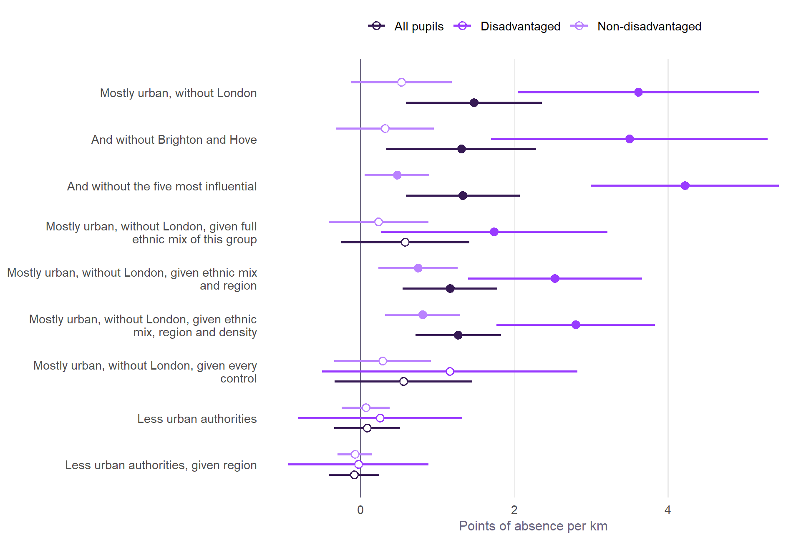
| Sample | All pupils | Disadvantaged | Non-disadvantaged |
|---|---|---|---|
| Mostly urban, without London | +1.48 (+0.59 to +2.36) | +3.61 (+2.05 to +5.18) | +0.53 (-0.12 to +1.19) |
| And without Brighton and Hove | +1.31 (+0.34 to +2.28) | +3.50 (+1.70 to +5.30) | +0.32 (-0.32 to +0.96) |
| And without the five most influential | +1.33 (+0.59 to +2.07) | +4.22 (+3.00 to +5.44) | +0.48 (+0.06 to +0.90) |
| Mostly urban, without London, given full ethnic mix of this group | +0.58 (-0.25 to +1.42) | +1.74 (+0.26 to +3.21) | +0.23 (-0.41 to +0.88) |
| Mostly urban, without London, given ethnic mix and region | +1.17 (+0.55 to +1.78) | +2.53 (+1.40 to +3.66) | +0.75 (+0.23 to +1.26) |
| Mostly urban, without London, given ethnic mix, region and density | +1.27 (+0.71 to +1.83) | +2.80 (+1.77 to +3.83) | +0.81 (+0.32 to +1.30) |
| Mostly urban, without London, given every control | +0.56 (-0.33 to +1.46) | +1.16 (-0.50 to +2.82) | +0.29 (-0.34 to +0.92) |
| Less urban authorities | +0.09 (-0.34 to +0.52) | +0.26 (-0.81 to +1.32) | +0.07 (-0.24 to +0.38) |
| Less urban authorities, given region | -0.08 (-0.41 to +0.25) | -0.03 (-0.94 to +0.88) | -0.07 (-0.30 to +0.15) |
NoteThe model behind this table
\[\text{absence}_{a,t} = \beta\,\text{near\_dep}_{a,t} + \gamma_1\,\text{share}_{a,t} + \gamma_2\,\text{urban\_share}_{a} + \boldsymbol{\delta}'\mathbf{x}_{a,t} + \tau_t + \varepsilon_{a,t}\]
# R/19_distance_absence.R: mostly urban authorities (urban_share >= 80) outside London
feols(overall ~ near_dep + share + urban_share | tp, data = filter(A, urban_share >= 80, !london), cluster = ~la)
# ... without Brighton and Hove; without the five with most influence (Cook's distance, 2024/25)
# ... given the group's ethnic mix, region, density, or every control, as in the table of what is leftIn mostly urban authorities outside London, disadvantaged absence rises 3.6 points per kilometre, in every year, and 2.5 given ethnic mix and region. It holds without Brighton and Hove (3.5) and without the five most influential authorities (4.2). In less urban authorities the slope is +0.3, with an interval around zero, in every year. Secondary minus primary tells the same story (+3.2 against -0.2).
Two other tests do not agree, so this is suggestive rather than settled.
- Within authorities the slope for the most deprived neighbourhoods is about the same in less urban authorities (+0.52) and in mostly urban ones (+0.48).
- By school the slope is similar across kinds of place (Table 17), though the rural interval is wide.
One reading is that an average distance for a whole rural county says little about any one child’s journey, so the authority test may simply not see rural effects. Journey times, and data on who gets school transport, are needed to settle it.
By school, for all pupils
DfE does not publish absence by disadvantage school by school, so this test is for all pupils, and the closest it can come is to ask whether the link is stronger in schools with more pupils on free school meals. For each school, its “nearest children” are those in the Output Areas for which it is the nearest school, and the measure is how far they live from it, typically 1.14 km (a tenth of schools under 0.61 km and a tenth over 2.88 km). It is a stand-in: pupils often go elsewhere. Selective schools, and schools that are nearest for fewer than 100 children, are left out. Models compare schools within the same local authority.
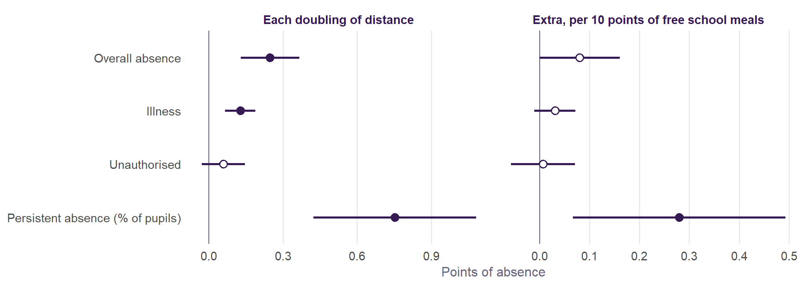
| Kind of absence | Mean | Each doubling of distance | Extra, per 10 points of FSM |
|---|---|---|---|
| Overall absence | 8.3 | +0.25 (+0.13 to +0.37) | +0.08 (-0.00 to +0.16) |
| Illness | 3.7 | +0.13 (+0.07 to +0.19) | +0.03 (-0.01 to +0.07) |
| Unauthorised | 3.1 | +0.06 (-0.03 to +0.15) | +0.01 (-0.06 to +0.07) |
| Persistent absence (% of pupils) | 22.5 | +0.75 (+0.42 to +1.08) | +0.28 (+0.07 to +0.49) |
NoteThe model behind this table
\[\text{absence}_s = \beta\,\log_2 \text{km}_s + \theta\,(\log_2 \text{km}_s \times \text{fsm\_c}_s) + \boldsymbol{\gamma}'\mathbf{z}_s + \alpha_a + \varepsilon_s\]
# R/18_distance.R: one row per school, autumn and spring 2025/26
feols(overall ~ l2 + fsm + eal + ks2_c + z_l4 + sen_sup + ehcp + mobile + girls + place + age16 | la, data = fr, cluster = ~la)
feols(overall ~ l2 * fsm_c + eal + ks2_c + z_l4 + sen_sup + ehcp + mobile + girls + place + age16 | la, ...) # last column\(\beta\) is points of absence for each doubling of km (l2 = \(\log_2\) km), the mean straight-line distance of the school’s nearest children; \(\theta\) is the last column, the extra for each 10 points of free school meals (scaled). \(\alpha_a\) compares schools in the same authority. The intake terms are those of Value Added v2.1: free school meals, English as an additional language, prior attainment, neighbourhood education (z_l4), special needs, mobility, girls, kind of place, and whether the school stops at 16.
Each doubling goes with 0.25 points more absence, against a mean of 8.3, which is small, as FFT found. It shows up in illness (+0.13) and in persistent absence (+0.75 points of pupils), more clearly than in unauthorised absence (+0.06). It is also stronger in schools with more disadvantaged pupils, which fits FFT’s result and the authority test above.
Figure 24 repeats this for each year, with each year’s school network.
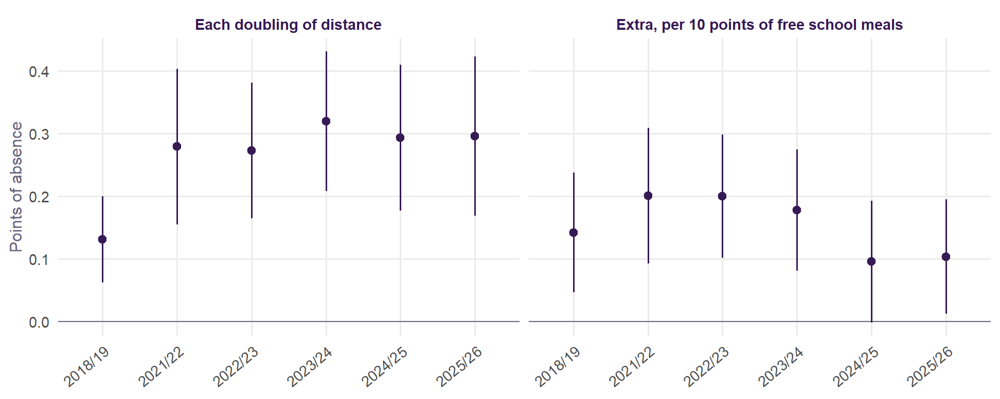
The link appears in all 6 years (from +0.13 to +0.32 for each doubling) and the extra for schools with more free school meals is above zero in every year, though not always clearly. The link is about twice as large since the pandemic as in 2018/19, when absence itself was much lower.
The models above leave out ethnic make-up. Since it matters so much between authorities, Table 16 adds each school’s White British share. It takes about a quarter off the slope for overall absence, and the slope stays clear. The extra for schools with more free school meals does not change.
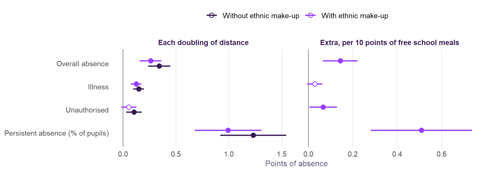
| Kind of absence | Without ethnic make-up | With ethnic make-up | Extra, per 10 points of FSM |
|---|---|---|---|
| Overall absence | +0.34 (+0.24 to +0.45) | +0.26 (+0.16 to +0.36) | +0.14 (+0.07 to +0.22) |
| Illness | +0.15 (+0.10 to +0.20) | +0.12 (+0.07 to +0.17) | +0.03 (-0.01 to +0.06) |
| Unauthorised | +0.10 (+0.03 to +0.18) | +0.05 (-0.02 to +0.13) | +0.07 (+0.00 to +0.13) |
| Persistent absence (% of pupils) | +1.23 (+0.92 to +1.54) | +0.99 (+0.68 to +1.31) | +0.51 (+0.28 to +0.74) |
NoteThe model behind this table
\[\text{absence}_{s,t} = \beta\,\log_2 \text{km}_s + \theta\,(\log_2 \text{km}_s \times \text{fsm\_c}_{s,t}) + \lambda\,\text{wbri}_s + \boldsymbol{\gamma}'\mathbf{z}_{s,t} + \alpha_{a,t} + \pi_{\text{place}} + \varepsilon_{s,t}\]
# R/19_distance_absence.R: schools by year, 2018/19 to 2025/26
feols(overall ~ l2 + l2:fsm_c + fsm_c + sen_sup + ehcp + eal + girls + lsize | la_g^tp + place, data = S2, cluster = ~la_g) # without
feols(overall ~ l2 + l2:fsm_c + wbri + fsm_c + sen_sup + ehcp + eal + girls + lsize | la_g^tp + place, data = S2, cluster = ~la_g) # with the White British sharewbri is the school’s White British share in January 2026, held across years. lsize is log of the school roll.
By kind of place. Table 17 splits schools by the same three kinds of place. The authority test is in the section above.
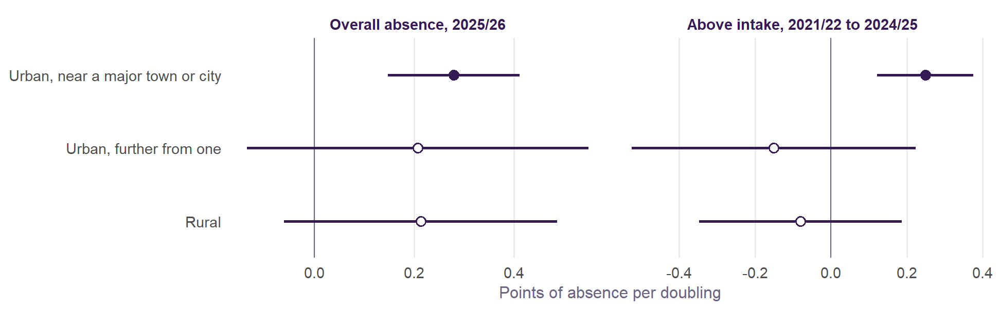
| Kind of place | Schools | Overall absence, 2025/26 | Above intake, 2021/22 to 2024/25 |
|---|---|---|---|
| Urban, near a major town or city | 2,334 | +0.28 (+0.15 to +0.41) | +0.25 (+0.12 to +0.38) |
| Urban, further from one | 186 | +0.21 (-0.14 to +0.55) | -0.15 (-0.52 to +0.22) |
| Rural | 373 | +0.21 (-0.06 to +0.49) | -0.08 (-0.35 to +0.19) |
NoteThe model behind this table
\[\text{absence}_s = \beta\,\log_2 \text{km}_s + \boldsymbol{\gamma}'\mathbf{z}_s + \alpha_a + \varepsilon_s \quad \text{(each kind of place separately)}\]
# R/18_distance.R
feols(overall ~ l2 + fsm + eal + ks2_c + z_l4 + sen_sup + ehcp + mobile + girls + age16 | la, data = filter(fr, place == p), cluster = ~la)
feols(abs_excess ~ l2 | la, data = sch_abs, cluster = ~la) # absence above what intake predicts, 2021/22 to 2024/25abs_excess is a school’s absence minus what its intake predicts, as on the area pages.
The estimates are similar in size across kinds of place, but only urban schools near a major town or city, where most schools are, give a clear answer. There are fewer schools elsewhere and the intervals are wide, so this cannot show whether distance matters less in rural areas.
And results?
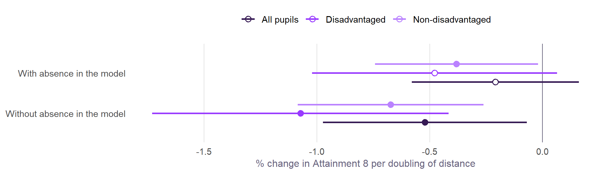
| Group | Without absence in the model | With absence in the model |
|---|---|---|
| All pupils | -0.5% (-1.0 to -0.1) | -0.2% (-0.6 to +0.2) |
| Disadvantaged | -1.1% (-1.7 to -0.4) | -0.5% (-1.0 to +0.1) |
| Non-disadvantaged | -0.7% (-1.1 to -0.3) | -0.4% (-0.7 to -0.0) |
NoteThe model behind this table
\[\log \text{Att8}_{s,t} = \beta\,\log_2 \text{km}_s + \boldsymbol{\gamma}'\mathbf{x}_{s,t} + u_t + u_{r} + u_{a(r)} + u_s + \varepsilon_{s,t}\]
# R/18_distance.R: the Value Added v2.1 model for each group, with distance added
lmer(log(ATT8SCR_FSM6CLA1A) ~ l2 + log(PTFSM6CLA1A) + log(PERCTOT) + log(PNUMEAL) + ks2_c + ADMPOL_PT +
z_l4 + sen_support + sen_ehcp + mobile + girls_school + age16 +
(1 | year_label) + (1 | gor_name/LANAME) + (1 | URN), data = dg, REML = FALSE)
# "without absence in the model" drops log(PERCTOT)\(u\) are random effects for year, region, authority within region and school. \(100\,(e^{\beta} - 1)\) is the % change in Attainment 8 for each doubling of distance, the table’s figure. The terms are those of v2.1.
Schools whose nearest children live further away have lower results than their intake predicts, by more for disadvantaged pupils (-1.1% for each doubling) than for non-disadvantaged pupils (-0.7%) or all pupils (-0.5%). Allowing for absence takes away about half of that for disadvantaged pupils. These are small differences, and part of what they measure may be the kind of place rather than the journey.
What it adds up to
Taking the tests together:
- Firm: the pattern. Disadvantaged absence goes with distance in every year from 2018/19 and on every measure of distance, and it is much weaker in primary schools.
- Firm: most of the slope in Figure 5 is not distance. Ethnic mix accounts for nearly all of the fall across authorities, and is a confounder rather than a step on the path from distance to absence.
- Likely: a smaller link of its own. It appears in mostly urban authorities given ethnic mix and region, within authorities for pupils in the most deprived neighbourhoods, and between schools given their intake and ethnic make-up. It shows up in unauthorised and persistent absence. Three different designs, with different weaknesses, point the same way.
- Not established: that distance causes it. Network changes point the right way, but the estimates are imprecise and those changes are not random.
Brighton and Hove’s disadvantaged pupils are close to the median authority for ethnic mix (64% White British, against 66%), so ethnic mix does not explain its high absence. Given mix, region, share and urbanity, the city is 2.5 points above expectation, 6th of 150 authorities, and given distance too it is 2.1 above, still 6th. So on this model distance explains only about 0.4 points of why the city stands out.
Its deprived neighbourhoods are 0.59 km further from a school than those of the median mostly urban authority outside London. On the urban estimates, from 1.2 with every control to 2.8 given ethnic mix, region and density, that would go with about 0.7 to 1.7 points of disadvantaged absence, out of the 4.8 by which the city is above England. On the within-authority estimate, for all pupils in deprived neighbourhoods, it would be about 0.2. So distance is a credible part of the city’s problem, and not the main explanation for it. Journey times on the real networks may show more, because Brighton’s hills and bus routes are what straight lines miss most.
Journey times on the real networks
Straight lines miss hills, the sea, street layouts and bus services. So for Brighton and Hove and the eight comparator places, every Output Area was routed to every state secondary school within 15 km with r5r, on OpenStreetMap streets and the Department for Transport’s bus timetables for a school-term Tuesday, 17 November 2026. The method follows the city’s school system model, with a window of departures in place of a single time, and every source and setting is in the methodology. This covers the journey to the quickest school from each neighbourhood, whichever school a child actually attends, and it is for all children: DfE publishes nothing on journeys by disadvantage.
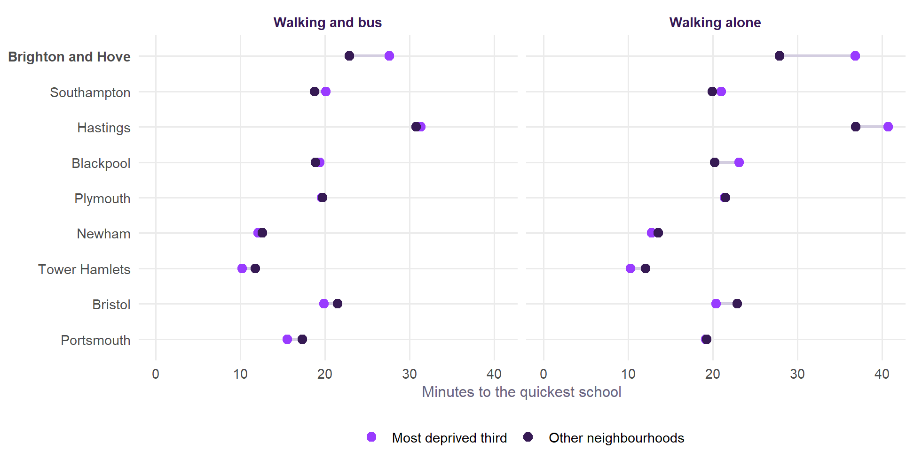
| Place | Dep. | Rest | Gap | Dep. | Rest | Gap | Dep. | Rest |
|---|---|---|---|---|---|---|---|---|
| Brighton and Hove | 27.6 | 22.9 | +4.7 | 36.9 | 27.9 | +9.0 | 35% | 21% |
| Southampton | 20.1 | 18.8 | +1.3 | 21.0 | 19.9 | +1.1 | 13% | 6% |
| Hastings | 31.3 | 30.8 | +0.6 | 40.7 | 36.9 | +3.8 | 55% | 44% |
| Blackpool | 19.4 | 18.9 | +0.5 | 23.2 | 20.3 | +2.9 | 0% | 4% |
| Plymouth | 19.6 | 19.7 | -0.2 | 21.4 | 21.5 | -0.1 | 10% | 11% |
| Newham | 12.1 | 12.6 | -0.5 | 12.8 | 13.6 | -0.8 | 0% | 0% |
| Tower Hamlets | 10.2 | 11.8 | -1.6 | 10.3 | 12.1 | -1.8 | 0% | 0% |
| Bristol | 19.9 | 21.5 | -1.6 | 20.4 | 22.9 | -2.5 | 11% | 17% |
| Portsmouth | 15.6 | 17.3 | -1.8 | 19.2 | 19.3 | -0.1 | 0% | 3% |
Brighton and Hove stands out on real journeys, as it does in straight lines. Children in its most deprived third of neighbourhoods are 27.6 minutes from a school by walking and bus, and the rest 22.9: 4.7 minutes further. No other place is more than 1.3 minutes further, and in 5 of the eight the deprived neighbourhoods are nearer. Walking alone, the difference is 9.0 minutes, more than twice the next largest (3.8). 10% of children in the city’s deprived neighbourhoods are more than 45 minutes from a school by walking and bus, against 2% of the rest.
Buses narrow the gap but do not close it. The difference falls by about half when buses are available in Brighton and Hove, from 9.0 to 4.7 minutes. In straight lines, measured here from Output Areas, the deprived neighbourhoods are 36% further. In time it is 32% further on foot and 20% with buses. That assumes every family can use the bus, and the fare is not counted.
Hastings looks different on this measure. Journeys there are the longest of the nine for everyone (31 minutes), but buses almost remove the difference between neighbourhoods (+0.6 minutes, against +3.8 on foot). In Hastings, 55% of children in deprived neighbourhoods and 44% of the rest are over 30 minutes from a school, so getting to school is hard across the town, whichever neighbourhood a child lives in.
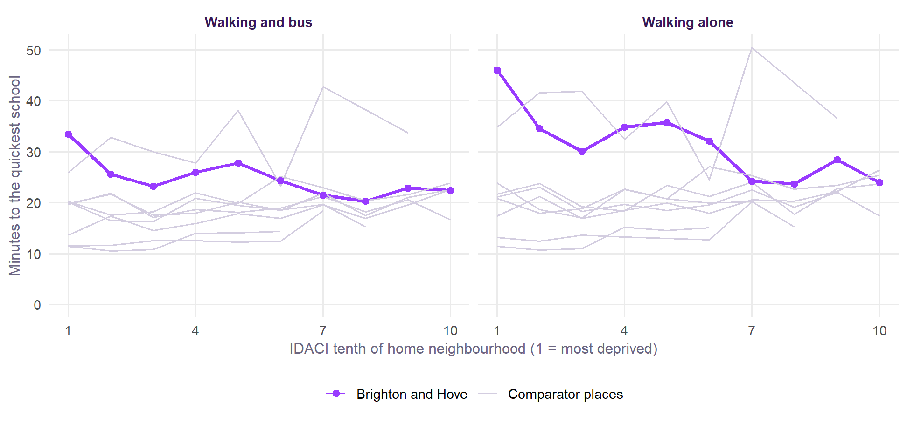
The children in the city’s most deprived tenth of neighbourhoods are 33 minutes from a school by walking and bus, against 22 minutes in its least deprived tenth.
What the journeys are made of
A long journey is one thing and a journey with a change of bus is another. Getting off one bus to wait for the next is a point where a child can stay off, and one more connection to miss. So the routes were examined for the number of buses, leaving at 07:45, 08:00 and 08:15. These are still journeys to the quickest school, not to the school a child attends, so they understate the changes many children make.
| Place | Dep. | Rest | Dep. | Rest | Dep. | Rest | Dep. | Rest |
|---|---|---|---|---|---|---|---|---|
| Brighton and Hove | 14% | 30% | 18% | 9% | 1.04 | 0.79 | 4.1 | 2.8 |
| Plymouth | 42% | 49% | 4% | 5% | 0.61 | 0.56 | 1.2 | 1.8 |
| Hastings | 23% | 29% | 3% | 8% | 0.79 | 0.79 | 6.9 | 8.1 |
| Southampton | 52% | 59% | 3% | 1% | 0.51 | 0.42 | 1.5 | 1.6 |
| Portsmouth | 49% | 39% | 2% | 1% | 0.53 | 0.62 | 2.8 | 1.8 |
| Blackpool | 28% | 46% | 2% | 2% | 0.74 | 0.56 | 2.8 | 1.8 |
| Bristol | 57% | 51% | 1% | 1% | 0.44 | 0.50 | 1.5 | 1.6 |
| Tower Hamlets | 78% | 66% | 1% | 1% | 0.23 | 0.34 | 0.6 | 0.8 |
| Newham | 63% | 60% | 0% | 1% | 0.37 | 0.41 | 1.2 | 1.3 |
Brighton and Hove’s deprived neighbourhoods need the most changes. 18% of children in its most deprived third of neighbourhoods would need two or more buses to reach even the quickest school, against 9% of the rest. In the other places shown, the highest figure for deprived neighbourhoods is 4%. 14% of those children can walk fastest, against 30% of the rest.
| Stop | Children changing here | From the most deprived third |
|---|---|---|
| White Horses | 440 | 254 |
| Open Market | 218 | 103 |
| Sackville Road | 193 | 86 |
| White Horses | 153 | 0 |
| Bottom of The Avenue | 74 | 74 |
| Station Road | 72 | 0 |
| Mithras House | 69 | 69 |
| Swanborough Drive | 65 | 65 |
This does not show up in absence, so far. Within authorities and given each school’s intake, schools whose nearest children need more buses do not have clearly higher absence (Table 22). That is 118 schools in 13 authorities, and uses journeys to the quickest school as a stand-in for real ones, so it is a weak test. Before distance is allowed for, the share needing two or more buses is clearer (t = 2.6), but that largely goes with distance. None of this rules out an effect on the children who do change buses.
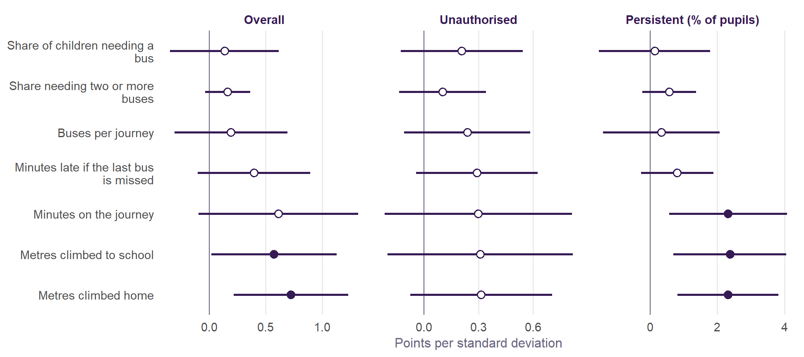
| Feature of the journey | Overall absence | Unauthorised | Persistent absence (% of pupils) |
|---|---|---|---|
| Share of children needing a bus | +0.13 (t = 0.5) | +0.21 (t = 1.2) | +0.13 (t = 0.2) |
| Share needing two or more buses | +0.16 (t = 1.6) | +0.10 (t = 0.8) | +0.56 (t = 1.4) |
| Buses per journey | +0.19 (t = 0.7) | +0.24 (t = 1.3) | +0.33 (t = 0.4) |
| Minutes late if the last bus is missed | +0.40 (t = 1.6) | +0.29 (t = 1.7) | +0.80 (t = 1.5) |
| Minutes on the journey | +0.61 (t = 1.7) | +0.30 (t = 1.1) | +2.32 (t = 2.6) |
| Metres climbed to school | +0.57 (t = 2.0) | +0.31 (t = 1.2) | +2.37 (t = 2.8) |
| Metres climbed home | +0.72 (t = 2.8) | +0.31 (t = 1.6) | +2.31 (t = 3.0) |
NoteThe model behind this table
\[\text{absence}_s = \beta\,x_s + \lambda\,\log_2 \text{km}_s + \boldsymbol{\gamma}'\mathbf{z}_s + \alpha_a + \varepsilon_s\]
# R/21_journey_analysis.R: schools in the nine routed places
feols(overall ~ x + l2 + fsm + wbri + sen_sup + ks2_c | la, data = sch, cluster = ~la)\(x\) is the journey feature in the row, as the child-weighted mean over the school’s nearest children; the table gives \(\beta\) times the standard deviation of \(x\).
School buses and missing them
Many places run dedicated school buses, with a few trips in the morning and a few back in the afternoon. In Brighton and Hove, for example, the 72 and 72A run from Whitehawk to Longhill’s grounds, three trips each morning and three back. Miss one and the alternatives may be poor. These routes can be picked out of the timetables by their pattern, for all of England: at most 8 trips a day, all within school travel hours, ending or starting by a state secondary school and no nearer a college. That finds 2,682 route and school pairs serving 1,000 schools. Timetables do not say who a bus is for, so this will include a few commuter journeys and miss school contracts that are not in them.
For each school bus in the routed places, Output Areas within 400 m of a stop on its morning trips were routed to its school at every minute from 07:00, with every bus and walking available. That gives the last time a child can leave and still arrive by the bell, and how late they are if they miss it. Bells are not in the data, so the bell is set 15 minutes after the last school bus arrives.
| School | Trips | Bell | Uses it | Late | Late, later bell | Walking | Absence |
|---|---|---|---|---|---|---|---|
| Longhill High | 5 | 08:19 | 31% | 16.5 | 6.9 | 64 | 13.9% |
| Portslade Aldridge | 2 | 08:33 | 21% | 4.7 | 5.6 | 65 | 9.6% |
| Dorothy Stringer | 4 | 08:22 | 57% | 4.1 | 1.6 | 63 | 10.5% |
| Blatchington Mill | 1 | 08:10 | 37% | 3.9 | 6.2 | 42 | 10.7% |
| King's | 3 | 08:15 | 77% | 3.6 | 0.8 | 48 | 6.4% |
| Cardinal Newman Catholic | 5 | 08:39 | 27% | 3.6 | 2.6 | 52 | 8.8% |
| Patcham High | 2 | 08:35 | 35% | 3.5 | 3.7 | 64 | 9.0% |
Longhill stands apart in the city. A child living near a stop who misses the last workable journey there arrives about 17 minutes late, against 3 to 5 minutes for the other city schools, and walking would take about 64 minutes. It also has the city’s highest absence. The result depends on the bell: at 10 minutes later the penalty is 7 minutes. The inferred 08:19 is close to the 08:20 in the school’s 2023 consultation, which should be confirmed for today. That document also notes that the school has one of the earliest starts in the area, and that a later start would go ahead only if the authority could provide the school buses, so the school day itself is set around them.
| School | Trips | Bell | Uses it | Late | Late, later bell | Walking | Absence |
|---|---|---|---|---|---|---|---|
| Notre Dame RC | 3 | 08:55 | 49% | 8.4 | 10.4 | 82 | 10.3% |
| Tor Bridge High | 2 | 08:20 | 80% | 6.9 | 15.0 | 81 | 9.9% |
| Coombe Dean | 4 | 08:40 | 64% | 6.8 | 2.5 | 80 | 7.8% |
| Devonport High School for Boys | 3 | 08:50 | 43% | 3.3 | 11.3 | 58 | 3.7% |
| Millbay | 1 | 09:23 | 5% | 3.2 | 2.6 | 51 | 10.8% |
| Callington Community College | 1 | 08:30 | 0% | 2.7 | 23.0 | 120+ | 9.5% |
Longhill is a striking case, not a pattern. Across the 21 schools in the routed places with school bus figures and published absence, the correlation between the penalty and absence is 0.03, and for unauthorised absence -0.05. Several schools with larger penalties than Longhill’s have low absence, usually with fewer disadvantaged pupils. Nor is having a school bus linked with absence across England (Table 25). Having a bus is not the same as depending on one, and it often means the school has made sure that children can get there, so a null here does not mean that missing one is harmless. Still, these tests give no general support.
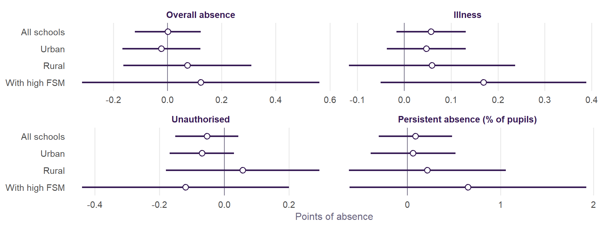
| Kind of absence | All schools | Urban | Rural | High free school meals |
|---|---|---|---|---|
| Overall absence | +0.00 (t = 0.0) | -0.02 (t = -0.3) | +0.07 (t = 0.6) | +0.12 (t = 0.5) |
| Illness | +0.06 (t = 1.5) | +0.05 (t = 1.1) | +0.06 (t = 0.7) | +0.17 (t = 1.5) |
| Unauthorised | -0.05 (t = -1.1) | -0.07 (t = -1.4) | +0.06 (t = 0.5) | -0.12 (t = -0.7) |
| Persistent absence (% of pupils) | +0.09 (t = 0.4) | +0.06 (t = 0.3) | +0.21 (t = 0.5) | +0.65 (t = 1.0) |
NoteThe model behind this table
\[\text{absence}_s = \beta\,\text{has\_bus}_s + \lambda\,\log_2 \text{km}_s + \boldsymbol{\gamma}'\mathbf{z}_s + \pi_{\text{place}} + \alpha_a + \varepsilon_s\]
# R/23_school_buses.R: every state secondary in England
feols(overall ~ has_bus + l2 + place + fsm + eal + wbri + ks2_c + z_l4 + sen_sup + ehcp + mobile + girls + age16 | la, data = d, cluster = ~la)has_bus is 1 if a school bus route serves the school (see the method).
The climb
Straight lines also miss the hills. r5r’s own elevation setting averages each street in both directions and did not change walking times in our tests, so the climb was measured directly, from OS Terrain 50 along each walking route, separately for the way to school and the way home.
| Place | Dep. | Rest | Dep. | Rest | Dep. | Rest | Dep., flat |
|---|---|---|---|---|---|---|---|
| Hastings | 71 | 74 | 67 | 57 | 47.2 | 43.7 | 42.6 |
| Brighton and Hove | 61 | 43 | 62 | 34 | 42.8 | 32.3 | 38.4 |
| Plymouth | 41 | 33 | 32 | 35 | 25.7 | 24.8 | 22.4 |
| Bristol | 19 | 25 | 16 | 24 | 22.5 | 25.7 | 21.7 |
| Southampton | 18 | 18 | 13 | 14 | 22.8 | 21.8 | 21.9 |
| Portsmouth | 7 | 5 | 12 | 6 | 20.7 | 20.6 | 20.5 |
| Blackpool | 10 | 8 | 9 | 7 | 24.2 | 21.5 | 24.0 |
| Tower Hamlets | 3 | 4 | 3 | 3 | 11.1 | 13.0 | 11.1 |
| Newham | 3 | 4 | 2 | 4 | 14.2 | 15.1 | 14.1 |
In Brighton and Hove, children in the most deprived third of neighbourhoods climb about 62 metres on the walk home, against 34 for the rest. That is the largest difference of the places here. Those children have both further to go and more to climb, which a straight line cannot show.
A signal in the routed places did not hold across England. In the schools of Table 22, more climb went clearly with more absence, more strongly than anything else tested. With so few schools that needed checking. Climb can be measured for all of England without routing, along the straight line from each of 178,605 Output Areas to its nearest school. In the routed places that matches the climb along the real route closely (r = 0.91).
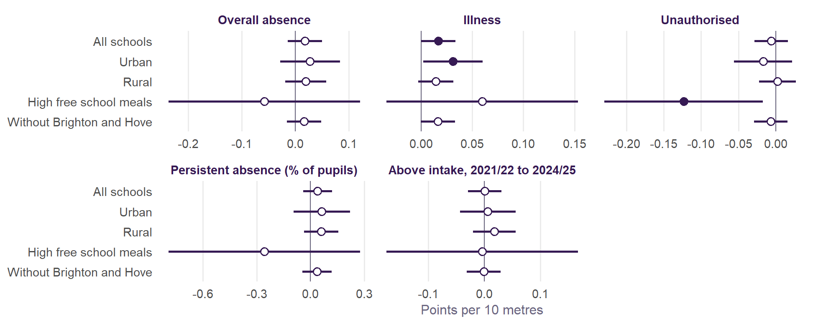
| Kind of absence | All schools | Urban | Rural | High free school meals | Without Brighton and Hove |
|---|---|---|---|---|---|
| Overall absence | +0.018 (t = 1.1) | +0.028 (t = 1.0) | +0.020 (t = 1.0) | -0.057 (t = -0.6) | +0.017 (t = 1.0) |
| Illness | +0.017 (t = 2.0) | +0.031 (t = 2.1) | +0.014 (t = 1.6) | +0.060 (t = 1.3) | +0.016 (t = 1.9) |
| Unauthorised | -0.006 (t = -0.5) | -0.017 (t = -0.9) | +0.002 (t = 0.2) | -0.123 (t = -2.3) | -0.007 (t = -0.6) |
| Persistent absence (% of pupils) | +0.041 (t = 1.0) | +0.063 (t = 0.8) | +0.061 (t = 1.3) | -0.257 (t = -0.9) | +0.036 (t = 0.9) |
| Above intake, 2021/22 to 2024/25 | +0.001 (t = 0.0) | +0.006 (t = 0.2) | +0.018 (t = 0.9) | -0.004 (t = -0.0) | -0.001 (t = -0.1) |
NoteThe model behind this table
\[\text{absence}_s = \beta\,\text{up\_back}_s + \lambda\,\log_2 \text{km}_s + \boldsymbol{\gamma}'\mathbf{z}_s + \alpha_a + \varepsilon_s\]
# R/25_climb.R: every state secondary in England
feols(overall ~ up_back + l2 + fsm + eal + wbri + ks2_c + z_l4 + sen_sup + ehcp + mobile + girls + age16 + place | la, data = S, cluster = ~la)up_back is the child-weighted mean metres climbed on the way home, along the straight line from each of the school’s nearest Output Areas; the table gives \(10\beta\).
Across England the link for overall absence is small and not clear: +0.018 points for each extra 10 metres (t = 1.1), and within authorities by home neighbourhood +0.056 (t = 1.4). There is a small link with illness absence (t = 2.0), clearer for schools near major towns and cities, and none with unauthorised absence. Between authorities the link for disadvantaged pupils is larger, given their ethnic mix (+0.34 per 10 metres, t = 3.0; non-disadvantaged pupils +0.15, all pupils +0.18), and falls by about half given region. So the first result looks largely local, with at most a small general link. Straight lines do understate climb, so a modest effect could still be there, and with climb along real walking routes in the 109 mostly urban authorities it is clearer.
Does time say more than distance about absence?
Among these places it cannot be answered: they include only 8 authorities with published absence. Table 28 sets them side by side, for all three groups of pupils, without modelling them. The test across all the mostly urban authorities is below.
| Place | Straight line (km) | Walking and bus (min) | All pupils | Disadvantaged | Non-disadvantaged |
|---|---|---|---|---|---|
| Hastings | 1.66 | 31.3 | – | – | – |
| Brighton and Hove | 1.60 | 27.6 | 10.8% | 18.0% | 8.0% |
| Southampton | 0.88 | 20.1 | 10.5% | 15.7% | 6.8% |
| Bristol | 0.85 | 19.9 | 10.3% | 15.8% | 7.2% |
| Plymouth | 0.85 | 19.6 | 10.2% | 16.4% | 7.4% |
| Blackpool | 1.03 | 19.4 | 9.6% | 13.2% | 6.1% |
| Portsmouth | 0.86 | 15.6 | 10.1% | 15.5% | 6.4% |
| Newham | 0.54 | 12.1 | 7.0% | 8.3% | 5.5% |
| Tower Hamlets | 0.42 | 10.2 | 6.5% | 7.6% | 5.1% |
DfE’s file by home neighbourhood gives a little more, by comparing tenths within these authorities (144 groups of pupils, all pupils, 2023/24 and 2024/25). Distance and time point the same way and are hard to tell apart: for one standard deviation more, overall absence is 0.56 points higher on straight-line distance, 0.64 on walking time and 0.58 on walking and bus time. Persistent absence is 1.7, 2.0 and 2.0 points of pupils. With so few authorities these are descriptive. The 109 mostly urban authorities give the proper test.
How far to trust these times
- Against the city’s model. On that model’s settings, times for 165 Brighton and Hove neighbourhoods correlate at 0.93 with the city’s school system model, with a mean of 23.4 minutes against 22.1 and a typical difference of 2.3 minutes. The difference between deprived neighbourhoods and the rest is 4.0 minutes here and 2.9 there. The model uses an older timetable, a set list of schools and an earlier departure for Longhill, and these have not been separated. Its simulator’s 4 minute difference is another measure again: it follows children to the school they are allocated and compares disadvantaged children with others.
- Walking speed. r5r’s default is 3.6 km/h, slow for a teenager, and is kept to match the city’s model. At 4.8 km/h Brighton and Hove’s difference with buses is 4.8 minutes, so the result does not depend on it.
- Buses only. Rail, the Tube, the DLR and school-only services that are not in the timetable files are missing. That matters most in Newham and Tower Hamlets, where it would shorten journeys, not lengthen them.
- One day. Departures from 07:45 to 08:15 on one Tuesday, taking the median. Real journeys depend on when a school starts.
- The quickest school is not always the school attended. Children go further than this, more so where choice or catchments send them elsewhere. Who can get a place at the quickest school is not considered.
- Boundaries. Each place is a district, with schools up to 15 km beyond it. Hastings, Blackpool and others have few schools nearby, and Plymouth and Bristol’s networks include neighbouring counties.
Journeys in the 109 mostly urban authorities
The nine places above show that Brighton and Hove stands out, but they are too few to say whether journeys matter for absence. So the routing was repeated for all 109 mostly urban authorities, London’s 32 boroughs included: 105,066 Output Areas on 28 networks, routed to every state secondary school within reach on the same Tuesday, 17 November 2026, with the same settings. Where the two overlap, the times are identical. Sources, networks and checks are in the methodology.
As before, journeys go to each neighbourhood’s quickest school, deprivation is of the neighbourhood, and the timetables are buses only. Rail, the Underground, Metro and trams are missing, which matters most in London, Greater Manchester, Tyne and Wear, the West Midlands, Sheffield and Nottingham. In all of them the missing services would shorten journeys.
Is Brighton and Hove unusual?
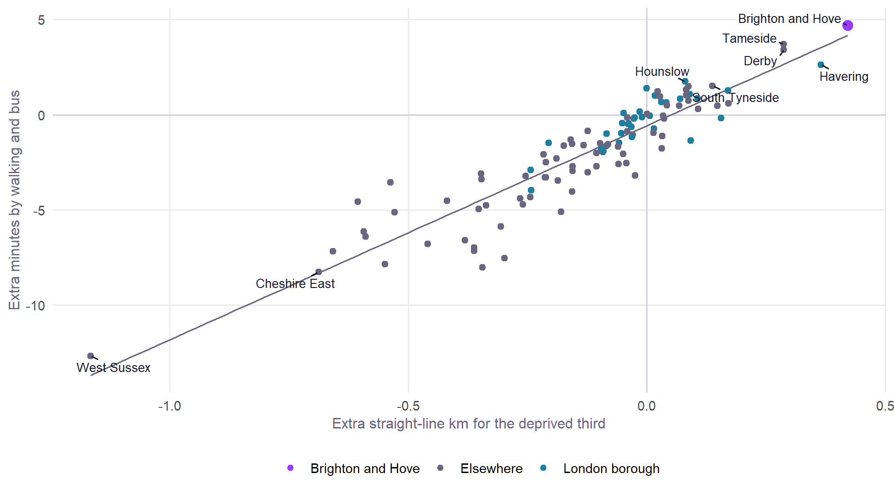
| Measure | Brighton and Hove | Rank | Median | First, or next |
|---|---|---|---|---|
| Extra minutes by walking and bus for the deprived third | 4.7 | 1 of 109 | -1.5 | Tameside (3.7) |
| Extra minutes, child in an income-deprived family against any other (IDACI) | 3.0 | 1 of 109 | -0.5 | Thurrock (1.0) |
| Extra minutes, England's most deprived three tenths against other neighbourhoods | 4.8 | 1 of 108 | -1.3 | Nottingham (3.9) |
| Extra minutes, mean of the three quickest schools | 5.8 | 1 of 109 | -1.5 | Tameside (2.3) |
| Extra minutes, quickest neither selective nor faith | 3.6 | 2 of 109 | -1.2 | Tameside (3.7) |
| Extra minutes walking for the deprived third | 9.0 | 1 of 109 | -1.9 | Derby (6.7) |
| Extra straight-line km for the deprived third | 0.42 | 1 of 109 | -0.06 | Havering (0.36) |
| Minutes by walking and bus, deprived third | 27.6 | 3 of 109 | 19.6 | Wokingham (29.7) |
| Minutes by walking and bus, other neighbourhoods | 22.9 | 40 of 109 | 21.6 | West Sussex (34.9) |
| Share over 30 minutes, deprived third | 35 | 3 of 109 | 6 | Barnsley (45) |
| Minutes per straight-line km, deprived third | 17.3 | 106 of 109 | 21.5 | Hammersmith and Fulham (26.2) |
| Share needing two or more buses, deprived third | 18 | 1 of 109 | 3 | Stockton-on-Tees (12) |
| Minutes waiting, deprived third | 2.4 | 1 of 109 | 1.1 | Surrey (1.9) |
| Minutes late if the last journey is missed, deprived third | 4.1 | 5 of 109 | 2.0 | Gateshead (5.4) |
| Metres climbed walking home, deprived third | 62 | 1 of 109 | 11 | Gateshead (39) |
No other authority’s deprived neighbourhoods are as far from a school. By walking and bus, children in the most deprived third of Brighton and Hove’s neighbourhoods are 4.7 minutes further from a school than the rest of the city, the largest gap of the 109. Next are Tameside (3.7) and Derby (3.4). In the median authority the deprived third is 1.5 minutes nearer, and only 28 of the 109 have it further at all. The city is first on every version of the gap in Table 29 but one: to the quickest school that is neither selective nor faith, it is second, just behind Tameside. Among the 37 densest authorities, the next largest gap is 1.7 minutes, in Hounslow.
It is mostly distance, not slow buses. Across the 109 authorities the gap in minutes follows the gap in kilometres closely (r = 0.92), and Brighton and Hove sits close to the line in Figure 33: its 0.42 km predicts 4.2 minutes. Per kilometre, the journeys from its deprived neighbourhoods are among the quickest anywhere (17.3 minutes, against a median of 21.5). The schools are unusually far away; the buses are not unusually slow.
But the journeys need the most changes. 18% of journeys from its deprived third need two or more buses, against a median of 3%, and the next highest is Stockton-on-Tees (12%). That is more than distance and density predict (12%), and only Stockton-on-Tees is further above its prediction. Waiting is the longest too, and so is the climb on the walk home, 62 metres against a median of 11.
In absolute terms, children in the city’s deprived neighbourhoods are 27.6 minutes from a school, 3rd longest of the 109, behind Wokingham and Barnsley, and 35% of them are more than 30 minutes away. The rest of the city is average (40th). The earlier work found the same thing among nine places, and it holds among 109.
What these journeys look like
Averages are hard to picture. Figure 34 shows real routes on the same networks, at the same scale: from Whitehawk, to its quickest school and to Dorothy Stringer, where the 2024 map sends more of its children; and, in Brighton and Hove and three comparator cities, a typical journey for a deprived neighbourhood. Each example is chosen by rule, not by eye: the Output Area whose time is nearest the mean for Whitehawk, or for the city’s most deprived third, among those whose quickest school is open to all. Each was routed every five minutes from 07:45 to 08:15 and the departure with the median time is shown (method).
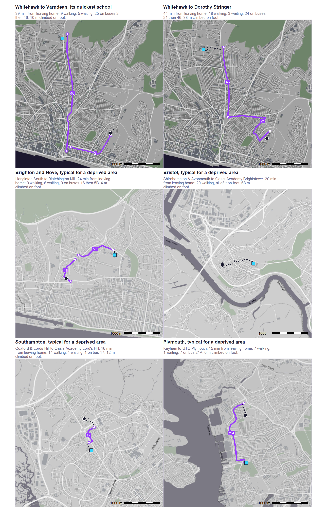
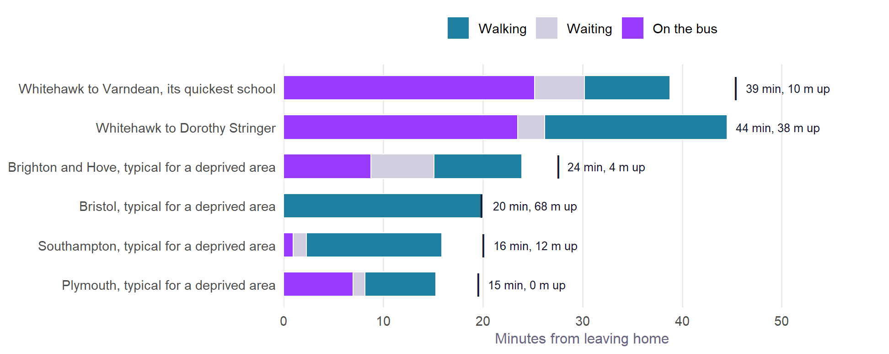
Elsewhere, a typical deprived neighbourhood’s journey is a walk, or a short ride on one bus. In Bristol, Southampton and Plymouth it takes 15 to 20 minutes, to a school about a kilometre away in a straight line. In Brighton and Hove the typical deprived journey already takes two buses. From Whitehawk it takes two buses across the city, about 39 minutes to the quickest school and 44 to Dorothy Stringer, with 38 metres to climb on foot on the second. Both Whitehawk journeys change buses in the city centre.
Does the journey say more than distance about absence?
With 109 authorities the tests above can be rerun on journeys. Table 30 sets out the three designs: authorities for disadvantaged pupils, home neighbourhoods within authorities for all pupils, and schools within authorities for all pupils, with primary absence as the falsification test.
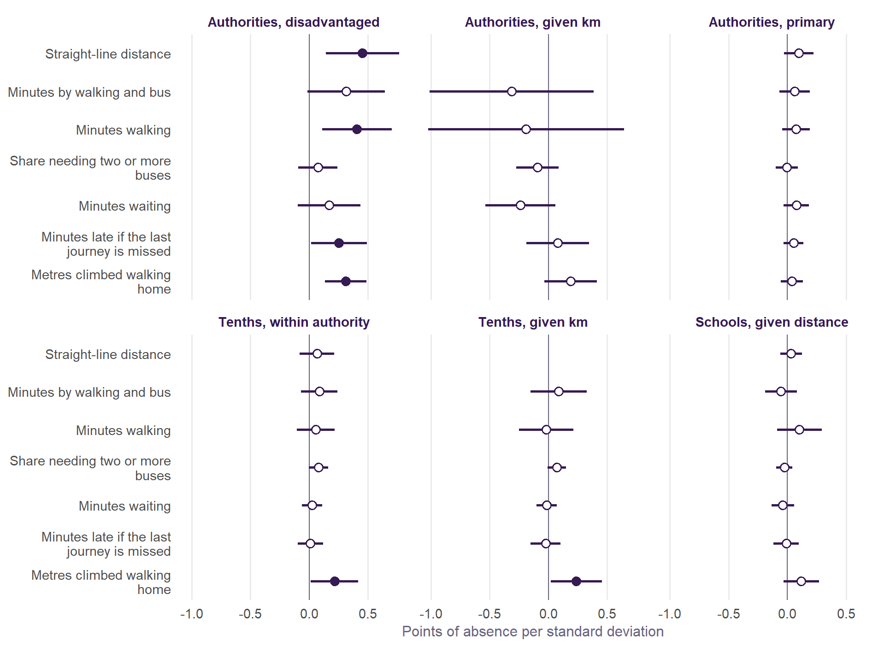
| Feature of the journey | Alone | Given km | Primary | Alone | Given km | Given km |
|---|---|---|---|---|---|---|
| Straight-line distance | +0.45 (2.9) | – | +0.10 (1.5) | +0.07 (0.9) | – | +0.03 (0.7) |
| Minutes by walking and bus | +0.31 (1.9) | -0.31 (-0.9) | +0.06 (1.0) | +0.08 (1.1) | +0.09 (0.7) | -0.05 (-0.8) |
| Minutes walking | +0.40 (2.7) | -0.19 (-0.4) | +0.07 (1.2) | +0.05 (0.7) | -0.02 (-0.2) | +0.10 (1.0) |
| Share needing two or more buses | +0.07 (0.9) | -0.09 (-1.0) | -0.00 (-0.1) | +0.08 (1.9) | +0.07 (1.8) | -0.03 (-0.7) |
| Minutes waiting | +0.17 (1.2) | -0.24 (-1.6) | +0.08 (1.4) | +0.02 (0.5) | -0.01 (-0.3) | -0.04 (-0.8) |
| Minutes late if the last journey is missed | +0.25 (2.1) | +0.08 (0.6) | +0.05 (1.2) | +0.01 (0.2) | -0.02 (-0.4) | -0.01 (-0.2) |
| Metres climbed walking home | +0.31 (3.5) | +0.19 (1.7) | +0.04 (0.8) | +0.21 (2.1) | +0.24 (2.1) | +0.12 (1.5) |
NoteThe model behind this table
\[\begin{aligned} \textbf{Authorities:}\quad & \text{absence}^{\text{dis}}_{a,t} = \beta\,x_a\,[+\,\lambda\,\text{km1\_dep}_a] + \boldsymbol{\gamma}'\mathbf{x}_{a,t} + \tau_t + \varepsilon_{a,t}\\ \textbf{Tenths:}\quad & \text{absence}_{a,d,t} = \beta\,x_{a,d}\,[+\,\lambda\,\text{km}_{a,d}] + \boldsymbol{\gamma}'\mathbf{c}_{a,d} + \alpha_{a,t} + \delta_{d,t} + \varepsilon_{a,d,t}\\ \textbf{Schools:}\quad & \text{absence}_s = \beta\,x_s + \lambda\,\log_2\text{km}_s + \boldsymbol{\gamma}'\mathbf{z}_s + \alpha_a + \varepsilon_s \end{aligned}\]
# R/29_la_analysis.R; x is the journey feature in the row (t_bus_dep, t_walk_dep, p_two_dep, wait_dep, late_dep, up_back_dep, ...)
feols(overall ~ x [+ km1_dep] + share + urban_share + eth_wb + eth_asian + eth_black + eth_mixed + gor +
graduates + bad_health + white_british + social_rent + no_car + deprived + log_density +
sen_sup + ehcp + ks2_c + eal + wbri + mobile | tp, data = A, cluster = ~la) # authorities, disadvantaged
feols(overall ~ x [+ km] + urban_c + dens_c + grad_c + wbri_c + nocar_c + social_c + bad_c | la^tp + dec^tp,
data = B, weights = ~enrol, cluster = ~la) # tenths, all pupils
feols(overall ~ x + l2 + fsm + eal + wbri + ks2_c + z_l4 + sen_sup + ehcp + mobile + girls + age16 + place | la,
data = S, cluster = ~la) # schools, all pupilsJourney features for authorities are of the most deprived third of neighbourhoods; for tenths and schools, of the Output Areas in them. Each figure is \(\beta\) times the standard deviation of \(x\), with its t value. “Primary” is the authority model with primary absence on the left.
- Distance holds up, most clearly outside London. For disadvantaged pupils, with every control, absence is 1.9 points higher for each extra kilometre between the deprived third and a school (t = 2.9), 2.5 outside London (t = 3.7) and 2.0 without Brighton and Hove (t = 2.5). It is smaller for non-disadvantaged pupils (0.5, t = 2.1) and all pupils (0.7, t = 2.1), and much weaker in primary (0.4, t = 1.5). This matches the straight-line results above.
- Time does not beat distance. Minutes and kilometres are too closely tied to separate (r = 0.93 across authorities, 0.86 within them). Put in the same model for disadvantaged pupils, distance keeps its link (t = 2.0) and time loses its own (t = -0.9). Within authorities neither wins.
- Changes of bus, waiting and the penalty for a missed bus add nothing beyond distance. With fewer controls each goes with more absence across authorities, because long journeys have more of them, but given distance none keeps a clear link.
- The climb is the one feature that keeps appearing. Across authorities it goes with disadvantaged absence given every control (t = 3.5, and 2.7 without Brighton and Hove), and still about t = 1.7 given distance. Within authorities it is t = 2.1 given distance, and in primary there is nothing. That is suggestive, not established: this page runs many tests, and climb along the straight line did not hold between schools across England.
Places to stop on the way
If a journey matters partly for what it passes, a child who gets off a bus beside a row of shops and cafés has more chances to go elsewhere than one who gets off at the school gate. So 627,553 points of interest were taken from OpenStreetMap, in five groups: food and drink, shops, leisure, open space and civic places. Schools, transport and parking are left out. Each was counted within 200 metres of the stop where a journey starts, every change of bus and the last stop, and within 50 metres of the walking route and the walking legs of bus journeys. The points of interest within 400 metres of home are a control, because a child in a busy place passes busy places whatever their journey. The tags and checks are in the methodology.
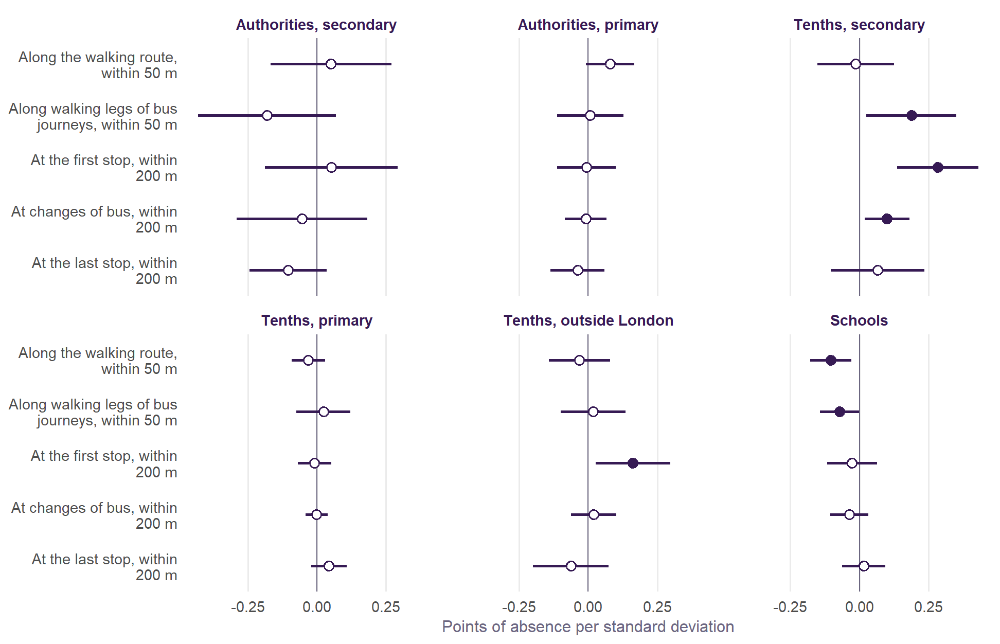
| Points of interest | Secondary | Primary | Secondary | Primary | Outside London | Secondary |
|---|---|---|---|---|---|---|
| Along the walking route, within 50 m | +0.05 (0.4) | +0.08 (1.8) | -0.01 (-0.2) | -0.03 (-1.0) | -0.03 (-0.6) | -0.10 (-2.7) |
| Along walking legs of bus journeys, within 50 m | -0.18 (-1.4) | +0.01 (0.1) | +0.19 (2.3) | +0.02 (0.5) | +0.02 (0.3) | -0.07 (-2.0) |
| At the first stop, within 200 m | +0.05 (0.4) | -0.01 (-0.1) | +0.28 (3.8) | -0.01 (-0.3) | +0.16 (2.3) | -0.03 (-0.6) |
| At changes of bus, within 200 m | -0.05 (-0.4) | -0.01 (-0.2) | +0.10 (2.4) | -0.00 (-0.1) | +0.02 (0.5) | -0.04 (-1.0) |
| At the last stop, within 200 m | -0.10 (-1.5) | -0.04 (-0.8) | +0.07 (0.8) | +0.04 (1.3) | -0.06 (-0.9) | +0.02 (0.4) |
NoteThe model behind this table
\[\text{absence}_{a,d,t} = \beta\,\text{POI}_{a,d} + \lambda\,\text{km}_{a,d} + \boldsymbol{\gamma}'\mathbf{c}_{a,d} + \eta\,\text{home400}_{a,d} + \phi_1\,\text{two\_share}_{a,d} + \phi_2\,\text{boardings}_{a,d} + \alpha_{a,t} + \delta_{d,t} + \varepsilon\]
# R/29_la_analysis.R; poi is the count in the row (walk50_any, leg50_any, p_any_board, p_any_change, p_any_alight)
feols(overall ~ poi_dep + share + urban_share + <ethnic mix, region, Census, pupils> | tp, data = A, cluster = ~la) # authorities
feols(overall ~ poi + km + urban_c + dens_c + grad_c + wbri_c + nocar_c + social_c + bad_c + home400_any + two_share + boardings
| la^tp + dec^tp, data = B, weights = ~enrol, cluster = ~la) # tenths
feols(overall ~ poi + l2 + fsm + eal + wbri + ks2_c + z_l4 + sen_sup + ehcp + mobile + girls + age16 + place | la, data = S, cluster = ~la) # schoolshome400_any is points of interest within 400 m of home; two_share and boardings hold how often the journey changes bus, so a busier change point is compared with a quieter one, not with no change at all.
Across authorities, nothing. Where an authority’s deprived journeys pass more points of interest, its disadvantaged pupils’ absence is no higher, at stops or along walking routes.
Within authorities, a hint, mostly in London. Home neighbourhoods whose bus journeys start, change or walk among more points of interest have a little more secondary absence than others in the same authority. One standard deviation more at changes of bus goes with 0.10 points more (t = 2.4), given distance, Census character, points of interest near home and how many buses the journey takes, so it is not just that these journeys change more often. It shows up in persistent absence too, and food and drink, shops and leisure behave alike. Primary absence shows nothing. But outside London it almost disappears (t = 0.5), it is not there for the most deprived three tenths, and between schools more points of interest along the way go with slightly less absence. London is where a bus-only network is least like the journeys children make. So this is a lead worth following with better routes and real bell times, not a finding. OpenStreetMap is also fuller in some places than others, which can make a count measure the map as much as the street.
In Brighton and Hove the busiest change point on the way to the quickest school is White Horses, on the coast road, where about 440 children would change, 254 of them from the city’s most deprived third, with 51 points of interest within 200 metres. Next is the Open Market on London Road (218 children, 127 points of interest).
What could it mean for GCSE results?
Absence matters for results, and more for disadvantaged pupils. Between schools in the same authority, with controls for intake, each point of absence goes with about 1.0 fewer Attainment 8 points for all pupils and 1.1 for disadvantaged pupils (t = 15). So the distance link can be carried through to results. If each extra kilometre between an authority’s deprived neighbourhoods and a school adds 2.3 points of absence for its disadvantaged pupils, and each point of absence costs what Value Added v2.1 says, that kilometre costs them about 2.2 Attainment 8 points, and 2.7 outside London. That is the chain in Table 32.
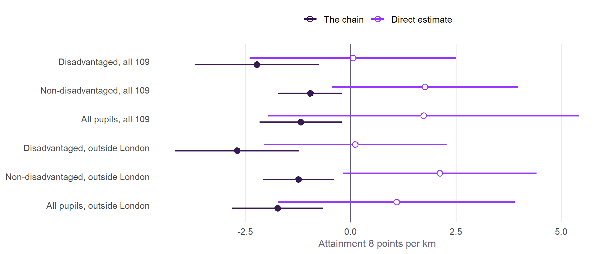
| Group | Sample | Absence | Per point of absence | Chain | Direct |
|---|---|---|---|---|---|
| Disadvantaged | All 109 | +2.33 | 0.96 (0.75) | -2.2 | +0.1 (-2.4 to +2.5) |
| Non-disadvantaged | All 109 | +0.67 | 1.43 (0.87) | -1.0 | +1.8 (-0.4 to +4.0) |
| All pupils | All 109 | +0.95 | 1.25 (0.86) | -1.2 | +1.7 (-2.0 to +5.4) |
| Disadvantaged | Outside London | +2.82 | 0.96 (0.61) | -2.7 | +0.1 (-2.1 to +2.3) |
| Non-disadvantaged | Outside London | +0.87 | 1.43 (0.55) | -1.2 | +2.1 (-0.2 to +4.4) |
| All pupils | Outside London | +1.39 | 1.25 (0.55) | -1.7 | +1.1 (-1.7 to +3.9) |
NoteThe model behind this table
\[\underbrace{\text{absence}_{a,t} = \beta_{km}\,\text{km1\_dep}_a + \dots}_{\text{first link}} \qquad \underbrace{\frac{\partial\,\text{Att8}}{\partial\,\text{absence}} = \frac{\bar{A}\,\varepsilon}{\bar{a}}}_{\text{second link, v2.1}} \qquad \text{chain} = \beta_{km} \times \frac{\bar{A}\,\varepsilon}{\bar{a}}\]
# R/30_distance_gcse.R: authorities by year, 2021/22 to 2024/25, every control, for each group
feols(overall ~ km1_dep + <every control> | tp, data = D, cluster = ~la) # Absence
feols(att8 ~ overall + <every control> | tp, data = D, cluster = ~la) # Per point of absence, in brackets
feols(att8 ~ km1_dep + <every control> | tp, data = D, cluster = ~la) # Direct\(\varepsilon\) is the Value Added v2.1 elasticity of Attainment 8 on absence for the group, and \(\bar{A}\) and \(\bar{a}\) the group’s mean Attainment 8 and absence across these authorities. att8 is the authority’s Attainment 8 for the group, the mean of its schools weighted by their pupils in that group. Details in the method.
The GCSE results themselves do not show it. Modelled directly, an authority’s Attainment 8 for disadvantaged pupils has no clear link with distance once every control is in: +0.1 points per kilometre, with an interval from -2.4 to +2.5, and +0.1 outside London. With fewer controls it is negative, but for non-disadvantaged pupils too, which points to the kind of area. Between schools within authorities there is no link with distance either way, for absence or for results. The interval is wide enough to include the chain in most versions, but outside London the chain falls just outside it. So the chain is an “if”: if the extra absence is caused by the journey, and if each point of it costs what it appears to, this is what distance would cost. It is not a measured effect on results, and it may be an overstatement.
The link does not flatten with distance. A straight line assumes each extra kilometre matters as much as the last. Fitted instead with distance in bands, outside London, where authorities spread from about 0.7 to 1.6 km, absence is much the same from 0.8 to 1.1 km and then higher, most of all for disadvantaged pupils, and lower in the few authorities under 0.8 km. If anything the link is steeper at the long end, where Brighton and Hove’s deprived third sits (1.6 km). Attainment 8, modelled directly, shows no matching decline at the long end (method).
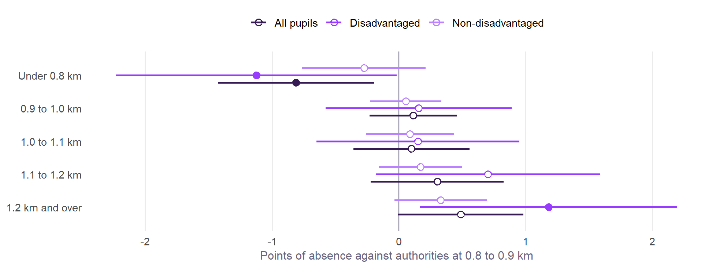
| Distance band | Authorities | Disadvantaged | Non-disadvantaged | All pupils |
|---|---|---|---|---|
| Under 0.8 km | 7 | -1.1 (t -2.0) | -0.3 (t -1.1) | -0.8 (t -2.6) |
| 0.8 to 0.9 km | 16 | reference | reference | reference |
| 0.9 to 1.0 km | 17 | +0.2 (t 0.4) | +0.1 (t 0.4) | +0.1 (t 0.7) |
| 1.0 to 1.1 km | 12 | +0.2 (t 0.4) | +0.1 (t 0.5) | +0.1 (t 0.4) |
| 1.1 to 1.2 km | 14 | +0.7 (t 1.6) | +0.2 (t 1.0) | +0.3 (t 1.1) |
| 1.2 km and over | 11 | +1.2 (t 2.3) | +0.3 (t 1.8) | +0.5 (t 1.9) |
NoteThe model behind this table
\[\text{absence}_{a,t} = \sum_{k \ne \text{0.8–0.9}} \beta_k\,\mathbf{1}[\text{km1\_dep}_a \in \text{band}_k] + \boldsymbol{\gamma}'\mathbf{x}_{a,t} + \tau_t + \varepsilon_{a,t}\]
# R/30_distance_gcse.R: authorities outside London, for each group
feols(overall ~ i(band, ref = "0.8 to 0.9") + share + urban_share + eth_wb + eth_asian + eth_black + eth_mixed + gor +
graduates + bad_health + white_british + social_rent + no_car + deprived + log_density +
sen_sup + ehcp + ks2_c + eal + wbri + mobile | tp, data = D, cluster = ~la)band cuts km1_dep, the child-weighted straight-line km from the deprived third to the nearest school, at 0.8, 0.9, 1.0, 1.1 and 1.2 km. Each \(\beta_k\) is the band’s absence against authorities at 0.8 to 0.9 km, with every control. Variables are in the glossary.
On that “if”, the cost is about the size of what mixing is estimated to gain. Gorard and Siddiqui (2019), cited in the debate on mixing intakes in Brighton and Hove, conclude that making schools “as mixed as possible” could improve outcomes by between 0.05 and 0.15 of a standard deviation. That is a standard deviation between pupils, in their study of the 549,186 pupils who finished GCSEs in 2015. On the Attainment 8 scale it is about 1.0 to 3.1 points for every pupil, or 0.5 to 1.6 on the narrower spread of progress once prior attainment is known (method). They give no calculation for the range, which matches the size of their school composition coefficients, and they are cautious about whether those effects are real or a statistical artefact.
Brighton and Hove’s deprived third is 0.42 km further from a school than the rest of the city. On the chain, that would cost its disadvantaged pupils about 1.1 Attainment 8 points: within Gorard and Siddiqui’s range, at its lower end. Three cautions apply, beyond the “if”:
- The two are not the same kind of change. The mixing estimate is for moving from today’s intakes to intakes as mixed as possible, and Brighton and Hove’s schools are already more mixed than most: 47th least segregated of 152 authorities on Gorard’s own index in 2024/25 (0.129, against a median of 0.145). The distance cost is today’s gap, not a change caused by any one policy.
- They fall on different children. The mixing gain is for every pupil; the distance cost falls mostly on disadvantaged pupils.
- The gap is not what the admissions changes did. That is a much smaller change, below.
So the fair reading is that, for disadvantaged pupils, a longer journey could plausibly cost about as much as the lower end of what mixing is estimated to gain, and that estimate is itself an optimistic one. Neither is shown directly in GCSE results.
What the admissions changes did
The comparison that bears on policy is not today’s gap but what the city’s admissions changes did to journeys and to mixing. The city’s school system model allocates each year’s children to schools under different rules and reports both, so its published runs can answer this. Two changes are separated: the catchment map introduced in 2024, against the catchments before it, and priority 6, the share of places at community schools for children from the single-school catchments (5% from 2026/27). Journeys are the model’s walking and bus minutes from home to the school offered, for the city’s schools; mixing is its Gorard index over the modelled intakes. Sources are in the methodology.
| Run | Disadvantaged (min) | Against others (min) | All children (min) | Segregation index |
|---|---|---|---|---|
| Today | 32.1 | +3.5 | 29.6 | 0.116 |
| The pre-2024 catchments | 31.8 | +3.2 | 29.5 | 0.128 |
| Today, without priority 6 | 32.1 | +3.5 | 29.5 | 0.114 |
| Whitehawk back in Longhill's catchment | 31.7 | +3.0 | 29.5 | 0.132 |
| CoMArt reopened | 30.0 | +2.0 | 28.5 | 0.127 |
On journeys, the changes made very little difference. The 2024 map lengthened disadvantaged children’s journeys by about 0.3 minutes on average, from 31.8 to 32.1, and priority 6 by another 0.06. That is a few per cent of the 4.7 minute gap between the city’s deprived neighbourhoods and the rest, which comes from where the schools are: with CoMArt reopened, disadvantaged children’s journeys would be 2.1 minutes shorter.
On mixing, a small change too. The 2024 map lowered the model’s index by 0.011, about 9% of the segregation before it, and priority 6 raised it by 0.003. The system model itself warns that differences of a few thousandths are within what a change of measure has moved, so this is at the edge of what it can resolve. Much of the map’s effect is Whitehawk’s move out of Longhill’s catchment: putting it back would shorten disadvantaged children’s journeys by 0.5 minutes and raise the index by 0.015.
In Attainment 8 points, both are a fraction of a point. Carried through the chain above, the 0.38 extra minutes would cost disadvantaged pupils about 0.03 to 0.06 points, whether the minutes are turned into kilometres at the 17.3 minutes per kilometre of the city’s deprived journeys or into absence directly. If Gorard and Siddiqui’s gain from making schools as mixed as possible applies in proportion to the segregation removed, the changes would gain every pupil about 0.07 to 0.20 points, or 0.09 to 0.27 for the map alone.
So, on the model and on these estimates, the admissions changes did not lengthen journeys enough to cost more than the most hopeful reading of their mixing gain, and neither is large. That is a different picture from the one today’s gap gives, because the gap is mostly not the policy’s doing. The proportional reading of Gorard and Siddiqui is generous to mixing, because their estimate is for a much larger change, may be a statistical artefact, and is not shown in Brighton and Hove’s results. And the journey cost may be understated, because a modelled average hides the children whose journeys changed most, and because the minutes are to the school offered on the model, not to the school attended. Neither number is large enough to decide the policy on. What matters far more for journeys is where the schools are.
The proposals that did not go ahead
The council first proposed priority 6 at 20%, with Dorothy Stringer and Blatchington Mill each cut by 30 places, from 330 to 300. After objections it went ahead at 5%, without the cuts. The campaign group Class Divide argued for 30%, with the same cuts. The school system model has no published runs of these, so they were run here on the published model itself, at the same version as above, under today’s map and priorities. The script first reproduces the model’s own run of today exactly, then changes only the priority 6 share and the two schools’ places (method).
| Run | Disadvantaged (min) | Other children (min) | Displaced | Segregation index | Priority 6 places |
|---|---|---|---|---|---|
| Today | 32.12 | 28.66 | 6 | 0.116 | 69 |
| Priority 6 at 20% | 32.24 | 28.81 | 14 | 0.124 | 117 |
| Stringer and Blatchington Mill at 300 | 32.08 | 28.69 | 11 | 0.114 | 66 |
| The council's proposal: both | 32.35 | 29.21 | 40 | 0.117 | 117 |
| Class Divide: priority 6 at 30%, and the cuts | 32.35 | 29.21 | 40 | 0.117 | 117 |
Above about 15%, priority 6 changes nothing, because the demand runs out. At 5% about 69 places are taken under it, at 10% 108, and from 20% on 117 and no more: on the model, that is every child in the single-school catchments who wants one of those places. So Class Divide’s proposal, 30% with the same cuts, would have done exactly what the council’s did, and so would 40%. The system model’s own analysis finds the same ceiling.
Both proposals would have lengthened journeys, mostly for other children, and displaced more. Disadvantaged children’s journeys would have been 0.23 minutes longer on average and other children’s 0.55. The number of children without a place at their catchment school would have risen from 6 to 40, because the cuts remove places at two full schools while priority 6 gives more of what is left to children from outside their catchments. Neither part does much alone; together they do.
It would not have made intakes more mixed. Priority 6 at 20% on its own raises the model’s segregation index, from 0.116 to 0.124; the cuts on their own lower it a little; together they leave it at 0.117, where it is today. Differences this small are at the edge of what the model can resolve.
By 2030 the cuts would no longer bite. With rolls falling, both schools fill fewer than 300 places in the model, so either proposal comes to the same as priority 6 at 20% alone: journeys 0.04 minutes longer for disadvantaged children and the index up 0.004.
In Attainment 8 points, on the same scales as above, either proposal would have cost disadvantaged pupils about 0.04 points through longer journeys, against no mixing gain at all. The cost is tiny, but so was the case for it: on the model, both would have lengthened journeys and displaced more children for no gain in how mixed the city’s intakes are, and Class Divide’s higher share would have added nothing to the council’s. That rests on the model’s demand for these places, which assumes families’ preferences would not change with the share. A bigger share might have drawn more applications from the single-school catchments, which the model cannot show.
Whose journeys changed most
City averages hide the neighbourhoods a change is aimed at. So the same model, at the same version, was run again and read neighbourhood by neighbourhood: each of its 195 zones, which are LSOAs or the parts of them on either side of a catchment boundary, named by the House of Commons Library’s neighbourhood names (method). Children are a year’s applicants, as the model places them.
| How the map moved it | Children | Disadvantaged | IDACI | All, before | All, now | Disadv., before | Disadv., now | Longhill | Stringer, Varndean |
|---|---|---|---|---|---|---|---|---|---|
| Out of Longhill's catchment, into Stringer and Varndean's | 78 | 59 | 0.43 | 53.7 | 56.8 | 51.6 | 56.1 | 22% to 5% | 19% to 48% |
| Into Longhill's catchment, from Stringer and Varndean's | 61 | 23 | 0.22 | 47.0 | 47.0 | 47.1 | 43.9 | 1% to 17% | 73% to 18% |
| Other catchment changes | 4 | 1 | 0.11 | 44.7 | 47.1 | 50.1 | 54.9 | 0% to 0% | 18% to 12% |
| Unchanged | 2124 | 519 | 0.14 | 28.5 | 28.5 | 29.1 | 29.1 | 4% to 4% | 27% to 27% |
Whitehawk is where the 2024 map lengthened journeys. The six zones it moved out of Longhill’s catchment and into Stringer and Varndean’s are in Whitehawk and the edge of Roedean and Marina: about 78 children a year, 59 of them disadvantaged on the model, in some of the most deprived neighbourhoods in the city (IDACI 0.43, against 0.14 for the zones the map left alone). Their journeys were already among the longest in the city, and the map lengthened them by 3.1 minutes on average, to 57, and by 4.5 minutes for the disadvantaged children, to 56. The share offered Longhill fell from 22% to 5%, and the share offered Stringer or Varndean rose from 19% to 48%. That is what the map was for, and the cost is a longer journey across the city.
The zones moved the other way gained a little. The 13 zones the map put into Longhill’s catchment, in Kemptown, Queen’s Park and Roedean and Marina, have about 61 children a year. Their journeys are unchanged on average, and their disadvantaged children’s are 3.2 minutes shorter, because more of them are offered Longhill. Across the city, 59 children a year have journeys more than two minutes longer under the map, almost all of them in Whitehawk, and 12 more than two minutes shorter. No zone’s average journey changes by more than five minutes, though for disadvantaged children in some Whitehawk zones it does.
On the Attainment 8 scale of the chain, Whitehawk’s 4.5 extra minutes would cost its disadvantaged children about 0.3 to 0.7 points each, if longer journeys cause the absence they go with. That is ten times the city average, but still under a point, and it rests on a link measured across authorities being applied to one neighbourhood.
| Catchment | Children | IDACI | All children | Disadvantaged |
|---|---|---|---|---|
| Dorothy Stringer and Varndean | 648 | 0.17 | +0.9 | +0.4 |
| Portslade Aldridge | 230 | 0.17 | +0.7 | +0.9 |
| Longhill | 264 | 0.15 | +0.5 | +0.6 |
| Blatchington Mill and Hove Park | 774 | 0.11 | +0.4 | +0.4 |
| Patcham | 202 | 0.10 | +0.0 | -0.1 |
| Brighton Aldridge | 150 | 0.33 | -0.8 | -0.9 |
The council’s proposal would have lengthened journeys most in the central catchments. The 187 children whose journeys would have risen by more than two minutes live mostly in Hollingbury, Fiveways and West Blatchington, among the least deprived neighbourhoods in the city, displaced from full schools by the cuts and by priority 6. Children in Brighton Aldridge’s catchment, the most deprived of the single-school catchments, would have gained 0.8 minutes on average through priority 6. Whitehawk, now in Stringer and Varndean’s catchment, would have gained a little (0.5 minutes for its disadvantaged children); Longhill’s catchment would not have gained at all.
What if a school were somewhere else?
Straight lines make this quick to test. These keep every neighbourhood and its children where they are and move only the school.
| Scenario | Most deprived third (km) | Other neighbourhoods (km) | How much further | Rank |
|---|---|---|---|---|
| Today | 1.57 | 1.18 | +33% | 5 of 293 |
| A school back on CoMArt's site | 1.19 | 1.08 | +10% | 27 of 293 |
| Longhill moved to the top of Elm Grove | 1.21 | 1.16 | +5% | 37 of 293 |
Either change would take about 0.36 km off the distance from the city’s deprived neighbourhoods and close most of the gap, which fits the closure of CoMArt in 2005 having left the east without a school nearby. Moving Longhill leaves the average for other neighbourhoods much the same, though those near its present site would be further from a school. This is not a forecast of where children would go or how they would travel: the school system analysis models that, along with the costs.
What this cannot say, and what comes next
- Straight lines are not journeys. Hills, the sea, bus routes and bus fares are all missing, and they may matter most in places like Brighton and Hove.
- The nearest school is not the school attended. Catchments, admissions and choice decide that. FFT measured from pupils’ own postcodes; here distance describes where schools and children are.
- These are comparisons between places and schools, so they show patterns, not what would happen to one child’s attendance if their journey changed. DfE publishes absence by disadvantage only down to authority level, and the file by home neighbourhood does not split by disadvantage.
Next on the roadmap:
- The children whose journeys the admissions changes lengthened most, such as those in Whitehawk, rather than the city’s average, from the school system model.
- Better school-level measures. A gravity model of who goes where would improve on “nearest children”, until a published measure of how far each school’s pupils travel exists.
- Real bell times, and the climb and the busy change points tested again with them.
- Rail, Metro and tram timetables for London and the large conurbations, where buses alone overstate journeys.